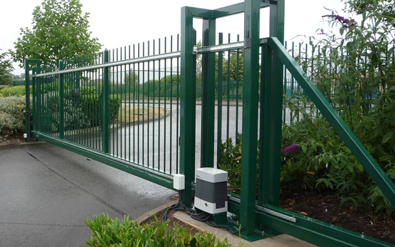

Birmingham Commercial Electric Gates: Enhance Security with Automation
For businesses that want to make a bold statement, custom designs and branding elements, such as logos or company names, can be incorporated into the gate design.
Whether you need sliding, swing, or bi-fold gates, expert installers can offer tailored solutions that match your business's security and operational requirements.
These scheduling capabilities can prevent unauthorized access during non-business hours and reduce security risks.
This results in less time spent waiting at entry points and more time spent on productive tasks.
The presence of automated gates can also lower insurance premiums for businesses, as many insurance providers offer discounts for properties with advanced security systems in place.
Electric gates have become an essential feature for businesses in Birmingham, offering a seamless blend of security, convenience, and enhanced curb appeal.
Gate Automation for Commercial Buildings in Birmingham
These gates can be equipped with features designed for frequent use, such as heavy-duty motors, automated access control systems, and integration with CCTV cameras.
For example, businesses in industries such as real estate, hospitality, or luxury goods can install gates that complement the overall design of the property.
The intercom system enables staff to verify the identity of the person at the gate and grant access remotely, offering additional convenience.

Electric Gate Services for Birmingham: Installation, Repair, & Maintenance
Electric gates have become a vital investment for businesses in Birmingham, offering a seamless combination of security, convenience, and aesthetic appeal.
This added layer of security helps prevent unauthorized access and ensures that only legitimate visitors can gain entry.
The environmental benefits of electric gates also cannot be overlooked.
Electric Gate Solutions for Birmingham’s High-Traffic Business Locations
In high-traffic areas, where frequent movement of vehicles and pedestrians occurs, electric gates ensure that the flow of people and goods is continuous and efficient, reducing delays that might otherwise cause inefficiencies.
For example, employees may have access to the main entryway, but managers or executives may be granted additional access to secure areas.
Routine inspections and servicing help prevent costly repairs and ensure that the gates remain in good working order.
Ensure 24/7 Security with Electric Gates for Birmingham Businesses
In addition to controlling who can enter the premises, electric gates offer protection from intruders who might seek to gain access during off-hours.
Electric gates are becoming an increasingly popular choice for businesses in Birmingham, and for good reason.
The first impression a customer or client has of your business can have a lasting impact.
How Electric Gates Can Streamline Operations for Birmingham Businesses
By investing in systems like electric gates, businesses demonstrate their commitment to creating a safer and more convenient work environment, which is an important factor in fostering long-term employee satisfaction.
Whether you choose a sleek, modern design or a more traditional, ornamental look, electric gates help your business stand out while maintaining security and functionality.
This not only enhances the curb appeal of your business but also strengthens brand recognition as customers and clients approach the property.
About Electric gate
This article needs additional citations for verification. Please help improve this article by adding citations to reliable sources. Unsourced material may be challenged and removed. Find sources: "Electric gate" – news · newspapers · books · scholar · JSTOR(February 2008) (Learn how and when to remove this message)
This article possibly contains original research. Please improve it by verifying the claims made and adding inline citations. Statements consisting only of original research should be removed.(February 2008) (Learn how and when to remove this message)
This article has multiple issues. Please help improve it or discuss these issues on the talk page. (Learn how and when to remove these messages)
(Learn how and when to remove this message)
Electric security gates at an apartment complex in Durham, North Carolina.
An electric gate is a type of gate that can be opened and closed using an electrically powered mechanism.
Electric Gate Options
[edit]
A sliding electric gate with electric motor and backup battery in case of mains failure. Note also the Infrared obstacle sensor located on the wall to prevent the gate from closing while a vehicle or other obstacle is in the way.
Driveway gate openers can be the rollback (sliding) type that retracks a gate along the fence or wall on wheels or bearing, or the swing type that draws the gate open or closed on hinges. They are usually operated by a remote controller or a sensor
Articulated
[edit]
Articulated gate openers can be used for gates with wide posts allowing opening in small spaces.[1] An easy system for DIY installers as they are simple to install but not as aesthetically pleasing as other motor designs. Also known as Crank arm operators, they are the main type of automation system sold in France, where low aluminium gates are often used.
Underground
[edit]
Under-gate Jack operators usually control the gate by directly moving the pivot point of each gate leaf. This makes the unit ideal cosmetically and also allows for up to 180 degrees of leaf swing as required. However controlling the pivot point of the gate, is like opening a door by twisting the hinge, and as so is very difficult due to the loads needed at that point. This is highlighted with snap, as the gate has to change direct, as soon as it can. For this reason they are recommend as only suitable for ‘Domestic’ systems in a low risk of abuse environment. Another major consideration with the use of under-gate units is that of water immersion/ingress and warranty voidance. If the water table is high or the drainage of the unit's foundation box inadequate throughout the systems life, then water ingress and unit failure is increased.
Ram or link arm units are usually simpler to install and maintain, they are visible to otherwise ignorant abuse and as they fix down along each gate leaf, they also have an obvious and sometimes major, mechanical advantage over Jacks. Therefore, Rams are far more suitable on Multi-user & commercial systems. Also the manual release is always above ground, making it often more user friendly in operation.
Sliding
[edit]
If space is an issue or the driveway behind the gates is on a steep incline, a better option would be a sliding gate. Sliding gates are also very popular in a commercial environment. Sliding gates are also used for cantilever gate systems.
Electric Gate History
[edit]
One of the first electric gates was invented by a Canadian Fred W. Watson in 1881. It was designed to be used for railway systems.[2] In 1884, a number of American newspapers reported that the French railway companies were about to adopt an electric gate opener. “A catch connected with an electro-magnet keeps a gate closed,” reported The National Tribune on October 9, 1884.[3] One of the early demonstrations of such gates in the United States was arranged by the short-lived Toulmin Electric Railway Gate Company in 1887, in Baltimore.[4] At the end of the 19th century, electric gates were also used at horse racing tracks.[5]
The first commercial electric gate systems were hydraulic and designed for reliability and ease of use. The cost of the hydraulic systems however meant that other companies started producing more affordable electromechanical alternatives. Hydraulic motors are the preferred choice on large and heavy gates as they can generate high levels of torque, electromechanical systems designed for lower usage domestic installations because they can be produced more cost effectively.[6]
The Electric Gate Motor
[edit]
The backbone of any electric gate, whether automatic or not, is the electric gate motor, two distinct motor types exist hydraulic, or electromechanical. This is the electric device which actually enables the electric gate to open and close without having to manually push the gate.
Electric Gate Safety
[edit]
The safety of an automated gate is an important consideration, in the European Union, automated gate safety is specified by a series of European Normalisations. An automated gate that has not been fitted with safety in mind can potentially become a major hazard particularly to untrained users. Various safety devices are available to make sure that your gates meet the highest of European or American safety standards.
Gate and Security
[edit]
Since electric gates operate slowly, they are susceptible to "tailgating" threats, in which a person or vehicle sneaks in behind an authorized user.[7] If security is a concern, a video surveillance camera should be installed.[7]
Electric gates alone, however solid and imposing they may be, cannot guarantee a completely secure environment electric locks, are often needed to boost the locking effectiveness of the gate motors. Electric gates are recommended to be used in combination with other security features to install a full security system. A few of these features are closed circuits with security cameras, additional gates in conjunction with the main gate, electronic keycards and keypads, security guards.[8]
Aside from the additional security features that should go with parking barrier gates, electric security gates often offer safety features like sensors that determine when there is an obstruction to prevent the electronic gate from swinging into a vehicle or closing on somebody's hands. To prevent the electronic gates from being damaged by irresponsible drivers driving fast speed bumps are also commonly placed before gate entrances to slow down vehicles.
Safety Regulations
[edit]
In the United States all the electric gate installations must meet Underwriters Laboratories 325 (UL 325) standard while in Europe installations must meet with the Machinery directive 2006/42/EC with EN13241-1 being the regulations concerning gates.[9][10][11][12]
The installer of the gate is responsible for the conformity to regulation, not the manufacturer. The two main EN regulations that then apply are EN 12453 which describes the safety levels that should be observed when installing a gate and EN12445 which describes the testing method that must be undertaken.[13]
The major points are the maximum amount of force at certain test points. Example - a maximum of 400N of force can be applied in the last 50, 300 and 500 mm of travel of a gate, after the initial impact the force must drop to 150N within 0.75 of a second and reduce to 25N within 5 seconds. During the mid travel of a gate the allowable force is 1400N. A full risk assessment of the gates must take place with all crush, cutting points shown to the client with appropriate protection devices offered, a recommended maintenance program should also be provided. Finally the installer must confirm that all electrical equipment fitted has the European CE mark all the time.
To conform to these regulations the gate system must be checked with a calibrated force tester and the full results kept in a technical file for 7 years. If the gate is not tested it does not comply.
Most gate kits can be fitted with safety equipment so that these limits are achieved and so cover that part of EN13241-1.
In September 2010, following two incidents in Bridgend and Manchester, when children were killed by sliding gates, the UK Health and Safety Executive issued 2 safety notices aimed at gate manufacturers and installers, demanding them to comply with the Annex A of BS EN 12453:2001 standard.[14][15]
Types of Gates
[edit]
In recent years, aluminium has emerged as the material of choice for driveway gates in the UK, and for good reason. One of the key reasons for this shift is the ease with which aluminium gates can meet force limitation guidance. Force limitation refers to the maximum amount of force that a gate can exert on an object or person, ensuring safety and minimizing the risk of accidents or injuries. With lightweight aluminium gates, meeting these force limitation guidelines becomes much more achievable, as they require less force to open and close compared to heavier materials such as wrought iron or steel.
Another advantage of aluminium gates is their compatibility with brushless motor operators. Brushless motors offer numerous benefits over traditional brushed motors, including higher efficiency, longer lifespan, and reduced maintenance requirements. Aluminium gates, being lightweight, work well with brushless motor operators, as the motors do not have to work as hard to maneuver the gates. This not only enhances the overall performance and reliability of the gate system but also contributes to energy efficiency, leading to cost savings in the long run.
Furthermore, aluminium gates provide additional advantages such as resistance to rust and corrosion, making them a durable and low-maintenance option. They are also highly customizable, allowing homeowners to choose from a wide range of designs, colors, and finishes to match their aesthetic preferences. Additionally, aluminium is a sustainable material as it can be recycled, aligning with the growing trend of eco-consciousness in the construction and home improvement industries.
[16]
Overall, the combination of meeting force limitation guidance more easily, compatibility with brushless motor operators, durability, low maintenance, and customizability has made aluminium the material of choice for driveway gates in the UK. With its numerous benefits, it offers homeowners a reliable, safe, and aesthetically pleasing option for enhancing the security and curb appeal of their properties.
References
[edit]
^
"Everything you need to know about access and security around the home". Irish Examiner. October 25, 2014. Retrieved April 29, 2019.
^"Index of Inventions" (PDF). Scientific American. XLVI (2): 27. January 14, 1882. Retrieved April 29, 2019 – via survivorlibrary.com.
^"Scientific Chat" (PDF). The National Tribune. October 9, 1884. p. 2. Retrieved April 29, 2019 – via chroniclingamerica.loc.gov.
^"Electric Gates". The Baltimore Sun. September 14, 1887. p. 4. Retrieved April 29, 2019 – via newspaperarchive.com.
^"Quick Starters Have Advantage: Maxwell Electric Gate Responsible for Many Miscalculations". The Times (Philadelphia). March 31, 1898. p. 9. Retrieved April 29, 2019 – via newspaperarchive.com.
^Jackson, John (April 4, 2017). "A Guide on Different Types of Gate Motors". Medium.com. Retrieved April 29, 2019.
^ abAdams, Todd B.; Wells, Quentin (2007). Residential Integrator's Certification. Thomson Delmar Learning Inc. p. 271. ISBN 978-1-4180-1409-4 – via Google Books.
^Smith, Brad (April 22, 2019). "Here is Why Automatic Driveway Gates can Benefit your Home". adgates.co.uk. Retrieved April 29, 2019.
^"Automatic Gates' Deadly Legacy". safetyresearch.net. February 26, 2016. Retrieved April 29, 2019.
^"Gate Operators and the ANSI/UL 325 Standard" (PDF). Door & Access Systems Manufacturers Association. Retrieved April 29, 2019.
^"EU Machinery Legislation". European Commission. 2019. Retrieved April 29, 2019.
^"DIN EN 13241: Industrial, commercial, garage doors and gates - Product standard, performance characteristics (includes Amendment :2016)". en-standard.eu. 2015. Retrieved April 29, 2019.
^"Powered gates: Ensuring powered doors and gates are safe". Health and Safety Executive. 2019. Retrieved April 29, 2019.
^"Gate safety call after deaths in Bridgend, Manchester". BBC News. September 2, 2010. Retrieved April 29, 2019.
^"Risks to pedestrians from crushing zones on electrically powered gates, 2". Health and Safety Executive. September 2, 2010. Retrieved April 29, 2019.
^"Aluminium Driveway gates". Charged Services. July 8, 2023. Retrieved July 8, 2023.
About Birmingham
City in West Midlands, England
"B'ham" redirects here. For other uses, see Bham.
City and metropolitan borough in England
Birmingham
Location within the United Kingdom
Show map of the United Kingdom
Birmingham
Location in Europe
Show map of Europe
Warwickshire
Staffordshire (part)
Worcestershire (part)
Birmingham
City and metropolitan borough
Birmingham skyline
Council House in Victoria Square†
Library of Birmingham
St Philip's Cathedral
Stephenson Place on New Street
Selfridges Building in the Bullring Shopping Centre
Birmingham (/ˈbÉœËÂÂrmɪŋəm/ⓘ[6][7][8]BUR-ming-É™m) is a city and metropolitan borough in the metropolitan county of West Midlands in England. It is the second-largest city in Britain[a][9] – commonly referred to as the second city of the United Kingdom[10][11][12][13][14] – with a population of 1.158million in the city proper.[4] Birmingham borders the Black Country to its west and, together with the city of Wolverhampton and towns including Dudley and Solihull, forms the West Midlands conurbation. The royal town of Sutton Coldfield is incorporated within the city limits to the northeast. The urban area has a population of 2.6million and the wider metropolitan area has a population of 4.3million, the largest outside London in the UK.[citation needed]
Located in the West Midlands region of England, Birmingham is considered to be the social, cultural, financial and commercial centre of the Midlands. It is just west of the traditional centre point of England at Meriden,[15] and is the most inland major city in the country,[16] lying north of the Cotswolds and east of the Shropshire Hills. Distinctively, Birmingham only has small rivers flowing through it, mainly the River Tame and its tributaries River Rea and River Cole – one of the closest main rivers is the Severn, approximately 20 miles (32 km) west of the city centre. The city does however have numerous canals, collectively named the Birmingham Canal Navigations.[17]
Historically a market town in Warwickshire in the medieval period, Birmingham grew during the 18th century during the Midlands Enlightenment and during the Industrial Revolution, which saw advances in science, technology and economic development, producing a series of innovations that laid many of the foundations of modern industrial society.[18] By 1791, it was being hailed as "the first manufacturing town in the world".[19] Birmingham's distinctive economic profile, with thousands of small workshops practising a wide variety of specialised and highly skilled trades, encouraged exceptional levels of creativity and innovation; this provided an economic base for prosperity that was to last into the final quarter of the 20th century. The Watt steam engine was invented in Birmingham.[20]
The resulting high level of social mobility also fostered a culture of political radicalism which, under leaders from Thomas Attwood to Joseph Chamberlain, was to give it a political influence unparalleled in Britain outside London and a pivotal role in the development of British democracy.[21] From the summer of 1940 to the spring of 1943, Birmingham was bombed heavily by the German Luftwaffe in what is known as the Birmingham Blitz. The damage done to the city's infrastructure, in addition to a deliberate policy of demolition and new building by planners, led to extensive urban regeneration in subsequent decades.
Birmingham's economy is now dominated by the service sector.[22] The city is a major international commercial centre and an important transport, retail, events and conference hub. Its metropolitan economy is the second-largest in the United Kingdom with a GDP of $121.1bn (2014[update]).[23] Its five universities,[24] including the University of Birmingham, make it the largest centre of higher education in the country outside London.[25] Birmingham's major cultural institutions – the City of Birmingham Symphony Orchestra, Birmingham Royal Ballet, Birmingham Repertory Theatre, Library of Birmingham and Barber Institute of Fine Arts – enjoy international reputations,[26] and the city has vibrant and influential grassroots art, music, literary and culinary scenes.[27] Birmingham was the host city for the 2022 Commonwealth Games.[28][29] In 2021, Birmingham was the third most visited city in the UK by people from foreign nations.[30]
Toponymy
[edit]
The name Birmingham comes from the Old English BeormingahÄÂÂm,[31] meaning the home or settlement of the Beormingas – a tribe or clan whose name means 'Beorma's people' and which may have formed an early unit of Anglo-Saxon administration.[32] Beorma, after whom the tribe was named, could have been its leader at the time of the Anglo-Saxon settlement, a shared ancestor, or a mythical tribal figurehead. Place names ending in -ingahÄÂÂm are characteristic of primary settlements established during the early phases of Anglo-Saxon colonisation of an area, suggesting that Birmingham was probably in existence by the early 7th century at the latest.[33] Surrounding settlements with names ending in -tÅ«n ('farm'), -lÄ“ah ('woodland clearing'), -worð ('enclosure') and -field ('open ground') are likely to be secondary settlements created by the later expansion of the Anglo-Saxon population,[34] in some cases possibly on earlier British sites.[35]
History
[edit]
Main articles: History of Birmingham, Economic history of Birmingham, Science and invention in Birmingham, and Timeline of Birmingham history
Pre-history and medieval
[edit]
There is evidence of early human activity in the Birmingham area dating back to around 8000 BC,[36] with Stone Age artefacts suggesting seasonal settlements, overnight hunting parties and woodland activities such as tree felling.[37] The many burnt mounds that can still be seen around the city indicate that modern humans first intensively settled and cultivated the area during the Bronze Age, when a substantial but short-lived influx of population occurred between 1700 BC and 1000 BC, possibly caused by conflict or immigration in the surrounding area.[38] During the 1st-century Roman conquest of Britain, the forested country of the Birmingham Plateau formed a barrier to the advancing Roman legions,[39] who built the large Metchley Fort in the area of modern-day Edgbaston in AD 48,[40] and made it the focus of a network of Roman roads.[41] Birmingham was then later established by the Beormingas around the 6th or 7th century as a small settlement in the then heavily forested Arden region in Mercia.
The development of Birmingham into a significant urban and commercial centre began in 1166, when the Lord of the Manor Peter de Bermingham obtained a charter to hold a market at his castle, and followed this with the creation of a planned market town and seigneurial borough within his demesne or manorial estate, around the site that became the Bull Ring.[42] This established Birmingham as the primary commercial centre for the Birmingham Plateau at a time when the area's economy was expanding rapidly, with population growth nationally leading to the clearance, cultivation and settlement of previously marginal land.[43] Within a century of the charter Birmingham had grown into a prosperous urban centre of merchants and craftsmen.[44] By 1327 it was the third-largest town in Warwickshire,[45] a position it would retain for the next 200 years.
Early modern
[edit]
The principal governing institutions of medieval Birmingham – including the Guild of the Holy Cross and the lordship of the de Birmingham family – collapsed between 1536 and 1547,[46] leaving the town with an unusually high degree of social and economic freedom and initiating a period of transition and growth.[47]
The importance of the manufacture of iron goods to Birmingham's economy was recognised as early as 1538, and grew rapidly as the century progressed.[48] Equally significant was the town's emerging role as a centre for the iron merchants who organised finance, supplied raw materials and traded and marketed the industry's products.[49] By the 1600s Birmingham formed the commercial hub of a network of forges and furnaces stretching from South Wales to Cheshire[50] and its merchants were selling finished manufactured goods as far afield as the West Indies.[51] These trading links gave Birmingham's metalworkers access to much wider markets, allowing them to diversify away from lower-skilled trades producing basic goods for local sale, towards a broader range of specialist, higher-skilled and more lucrative activities.[52]
The East Prospect of Birmingham (1732), engraving by William Westley
By the time of the English Civil War Birmingham's booming economy, its expanding population, and its resulting high levels of social mobility and cultural pluralism, had seen it develop new social structures very different from those of more established areas.[53] Relationships were built around pragmatic commercial linkages rather than the rigid paternalism and deference of feudal society, and loyalties to the traditional hierarchies of the established church and aristocracy were weak.[53] The town's reputation for political radicalism and its strongly Parliamentarian sympathies saw it attacked by Royalist forces in the Battle of Birmingham in 1643,[54] and it developed into a centre of Puritanism in the 1630s[53] and as a haven for Nonconformists from the 1660s.[55]
By 1700 Birmingham's population had increased fifteen-fold and the town was the fifth-largest in England and Wales.[56] The 18th century saw this tradition of free-thinking and collaboration blossom into the cultural phenomenon now known as the Midlands Enlightenment.[57] The town developed into a notable centre of literary, musical, artistic and theatrical activity;[58] and its leading citizens – particularly the members of the Lunar Society of Birmingham – became influential participants in the circulation of philosophical and scientific ideas among Europe's intellectual elite.[59] The close relationship between Enlightenment Birmingham's leading thinkers and its major manufacturers[60] – in men like Matthew Boulton and James Keir they were often in fact the same people[61] – made it particularly important for the exchange of knowledge between pure science and the practical world of manufacturing and technology.[62] This created a "chain reaction of innovation",[63] forming a pivotal link between the earlier Scientific Revolution and the Industrial Revolution that would follow.[64]
Industrial Revolution
[edit]
Matthew Boulton, a prominent early industrialist
Birmingham's explosive industrial expansion started earlier than that of the textile-manufacturing towns of the North of England,[65] and was driven by different factors. Instead of the economies of scale of a low-paid, unskilled workforce producing a single bulk product such as cotton or wool in large, mechanised units of production, Birmingham's industrial development was built on the adaptability and creativity of a highly paid workforce with a strong division of labour, practising a broad variety of skilled specialist trades and producing a constantly diversifying range of products, in a highly entrepreneurial economy of small, often self-owned workshops.[66] This led to exceptional levels of inventiveness: between 1760 and 1850 – the core years of the Industrial Revolution – Birmingham residents registered over three times as many patents as those of any other British town or city.[67]
The demand for capital to feed rapid economic expansion also saw Birmingham grow into a major financial centre with extensive international connections.[68] Lloyds Bank was founded in the town in 1765,[69] and Ketley's Building Society, the world's first building society, in 1775.[70] By 1800 the West Midlands had more banking offices per head than any other region in Britain, including London.[68]
The Soho Manufactory of 1765 – pioneer of the factory system and the industrial steam engine
Innovation in 18th-century Birmingham often took the form of incremental series of small-scale improvements to existing products or processes,[71] but also included major developments that lay at the heart of the emergence of industrial society.[18] In 1709 the Birmingham-trained Abraham Darby I moved to Coalbrookdale in Shropshire and built the first blast furnace to successfully smelt iron ore with coke, transforming the quality, volume and scale on which it was possible to produce cast iron.[72] In 1732 Lewis Paul and John Wyatt invented roller spinning, the "one novel idea of the first importance" in the development of the mechanised cotton industry.[73] In 1741 they opened the world's first cotton mill in Birmingham's Upper Priory.[74] In 1746 John Roebuck invented the lead chamber process, enabling the large-scale manufacture of sulphuric acid,[75] and in 1780 James Keir developed a process for the bulk manufacture of alkali,[76] together marking the birth of the modern chemical industry.[77] In 1765 Matthew Boulton opened the Soho Manufactory, pioneering the combination and mechanisation under one roof of previously separate manufacturing activities through a system known as "rational manufacture".[78] As the largest manufacturing unit in Europe, this came to symbolise the emergence of the factory system.[79]
Most significant, however, was the development in 1776 of the industrial steam engine by James Watt and Matthew Boulton.[80] Freeing for the first time the manufacturing capacity of human society from the limited availability of hand, water and animal power, this was arguably the pivotal moment of the entire Industrial Revolution and a key factor in the worldwide increases in productivity over the following century.[81]
Regency and Victorian
[edit]
Thomas Attwood addressing a 200,000-strong meeting of the Birmingham Political Union during the Days of May 1832 – oil on canvas by Benjamin Haydon (c. 1832–1833)
Birmingham rose to national political prominence in the campaign for political reform in the early 19th century, with Thomas Attwood and the Birmingham Political Union bringing the country to the brink of civil war during the Days of May that preceded the passing of the Great Reform Act in 1832.[82] The Union's meetings on Newhall Hill in 1831 and 1832 were the largest political assemblies Britain had ever seen.[83] Lord Durham, who drafted the Act, wrote that "the country owed Reform to Birmingham, and its salvation from revolution".[84] This reputation for having "shaken the fabric of privilege to its base" in 1832 led John Bright to make Birmingham the platform for his successful campaign for the Second Reform Act of 1867, which extended voting rights to the urban working class.[85]
The original Charter of Incorporation, dated 31 October 1838, was received in Birmingham on 1 November, then read in the Town Hall on 5 November with elections for the first Birmingham Town Council being held on 26 December. Sixteen Aldermen and 48 Councillors were elected and the Borough was divided into 13 wards. William Scholefield became the first Mayor and William Redfern was appointed as Town Clerk. Birmingham Town Police were established the following year.[citation needed]
Birmingham's tradition of innovation continued into the 19th century. Birmingham was the terminus for both of the world's first two long-distance railway lines: the 82-mile (132 km) Grand Junction Railway of 1837 and the 112-mile (180 km) London and Birmingham Railway of 1838.[86] Birmingham schoolteacher Rowland Hill invented the postage stamp and created the first modern universal postal system in 1839.[87] Alexander Parkes invented the first human-made plastic in the Jewellery Quarter in 1855.[88]
By the 1820s, the country's extensive canal system had been constructed, giving greater access to natural resources and fuel for industries. During the Victorian era, the population of Birmingham grew rapidly to well over half a million[89] and Birmingham became the second largest population centre in England. Birmingham was granted city status in 1889 by Queen Victoria.[90] Joseph Chamberlain, mayor of Birmingham and later an MP, and his son Neville Chamberlain, who was Lord Mayor of Birmingham and later the British Prime Minister, are two of the most well-known political figures who have lived in Birmingham. The city established its own university in 1900.[91]
20th century and contemporary
[edit]
Ruins of the Bull Ring, destroyed during the Birmingham Blitz, 1940An aerial photograph of Birmingham in 1946
The city suffered heavy bomb damage during World War II's "Birmingham Blitz". The city was also the scene of two scientific discoveries that were to prove critical to the outcome of the war.[92] Otto Frisch and Rudolf Peierls first described how a practical nuclear weapon could be constructed in the Frisch–Peierls memorandum of 1940,[93] the same year that the cavity magnetron, the key component of radar and later of microwave ovens, was invented by John Randall and Henry Boot.[94] Details of these two discoveries, together with an outline of the first jet engine invented by Frank Whittle in nearby Rugby, were taken to the United States by the Tizard Mission in September 1940, in a single black box later described by an official American historian as "the most valuable cargo ever brought to our shores".[95]
The city was extensively redeveloped during the 1950s and 1960s.[96][97] This included the construction of large tower block estates, such as Castle Vale. The Bull Ring was reconstructed and New Street station was redeveloped. In the decades following World War II, the ethnic makeup of Birmingham changed significantly, as it received waves of immigration from the Commonwealth of Nations and beyond.[98] The city's population peaked in 1951 at 1,113,000 residents.[89]
Aftermath of the bomb attack on the Mulberry Bush Pub during the pub bombings of 1974
21 people were killed and 182 were injured in a series of bomb attacks in 1974, thought to be carried out by the Provisional IRA. The bombings were the worst terror attacks in England up until the 2005 London bombings[99] and consisted of bombs being planted in two pubs in central Birmingham. Six men were convicted, who became known later as the Birmingham Six and sentenced to life imprisonment, who were acquitted after 16 years by the Court of Appeal.[100] The convictions are now considered one of the worst British miscarriages of justice in recent times. The true perpetrators of the attacks are yet to be arrested.[101][102][103]
World leaders meet in Birmingham for the 1998 G8 Summit
Birmingham remained by far Britain's most prosperous provincial city as late as the 1970s,[104] with household incomes exceeding even those of London and the South East,[105] but its economic diversity and capacity for regeneration declined in the decades that followed World War II as Central Government sought to restrict the city's growth and disperse industry and population to the stagnating areas of Wales and Northern England.[106] These measures hindered "the natural self-regeneration of businesses in Birmingham, leaving it top-heavy with the old and infirm",[107] and the city became increasingly dependent on the motor industry. The recession of the early 1980s saw Birmingham's economy collapse, with unprecedented levels of unemployment and outbreaks of social unrest in inner-city districts.[108]
Since the turn of the 21st century, many parts of Birmingham have been transformed, with the redevelopment of the Bullring Shopping Centre,[109] the construction of the new Library of Birmingham (the largest public library in Europe) and the completed regeneration of old industrial areas such as Brindleyplace, The Mailbox and the International Convention Centre, ongoing rebuilding of Eastside, Digbeth, and Centenary Square, as well as the rationalisation of the Inner Ring Road. In 1998 Birmingham hosted the 24th G8 summit. The city successfully hosted the 2022 Commonwealth Games.[110][29]
On 5 September 2023, Birmingham city council issued a Section 114 notice to say that it could not meet its financial commitments. Effectively this meant the council was bankrupt. Major contributing factors include a £1.1billion sum that has been paid out since 2010 for equal pay claims, an ongoing bill for £760million, increasing by £14million a month, and problems with a new IT system that was projected to cost £19million, but is now closer to £100million. There is a projected £87million deficit for the financial year 2023/2024.[111]
Government
[edit]
Main article: Government of Birmingham
The Council House, headquarters of Birmingham City Council
Birmingham City Council has 104 councillors representing 69 wards as of 2024.[112] Its headquarters are at the Council House in Victoria Square. As of 2023[update], the council has a Labour Party majority and is led by John Cotton.[113][114] Labour replaced the previous no overall control status at the May 2012 elections.[115] The honour and dignity of a Lord Mayoralty was conferred on Birmingham by Letters Patent on 3 June 1896.[116]
Birmingham's ten parliamentary constituencies are represented in the House of Commons as of 2024[update] by one Conservative, one independent and eight Labour MPs.[117]
Originally part of Warwickshire, Birmingham expanded in the late 19th and early 20th centuries, absorbing parts of Worcestershire to the south and Staffordshire to the north and west. The city absorbed Sutton Coldfield in 1974 and became a metropolitan borough in the new West Midlands county,[118] comprising Birmingham, Coventry, Dudley, Sandwell, Solihull, Walsall, and Wolverhampton. A top-level government body, the West Midlands Combined Authority, was formed in April 2016. The WMCA holds devolved powers in transport, development planning, economic growth, and large-scale investment. The authority is governed by a directly elected mayor, currently Labour's Richard Parker, similar to the Mayor of London.[119]
Geography
[edit]
Further information: List of areas of Birmingham
Birmingham is located in the centre of the West Midlands region of England on the Birmingham Plateau – an area of relatively high ground, ranging between 500 and 1,000 feet (150 and 300 metres) above sea level and crossed by Britain's main north–south watershed between the basins of the Rivers Severn and Trent. To the immediate south west of the city lie the Lickey Hills,[120] Clent Hills and Walton Hill, which reach 1,033 feet (315 m) and have extensive views over the city. Birmingham is drained only by minor rivers and brooks, primarily the River Tame and its tributaries the Cole and the Rea. Birmingham is located significantly inland, and its nearest body of sea is at Liverpool Bay. It lies at the same latitude as Lowestoft, Britain's easternmost settlement; it is therefore much more proximate to the western coast of Wales, at Cardigan Bay.[121][122]
Cityscape
The City of Birmingham forms a conurbation with the borough of Solihull to the south east, and with the city of Wolverhampton and the industrial towns of the Black Country to the north west, which form the West Midlands Built-up Area covering 59,972 ha (600 km2; 232 sq mi).[citation needed] Surrounding this is Birmingham's metropolitan area – the area to which it is closely economically tied through commuting – which includes the town of Tamworth and the city of Lichfield in Staffordshire to the north; the city of Coventry and the towns of Nuneaton, Bedworth, Whitnash, Kenilworth, Rugby, Atherstone, Coleshill, Warwick and Leamington Spa to the east in Warwickshire and the Worcestershire towns of Redditch and Bromsgrove to the south west.[123]
As the crow flies, Birmingham lies approximately 100 miles (160 km) north-west of London, 85 miles (137 km) north-east of the Welsh capital Cardiff, 45 miles (72 km) south-west of Nottingham, 70 miles (110 km) south of Manchester, and 75 miles (121 km) north-north-east of Bristol.
Much of the area now occupied by the city was originally a northern reach of the ancient Forest of Arden and the city remains relatively densely covered by oak in a large number of districts such as Moseley, Saltley, Yardley, Stirchley and Hockley. These places, with names ending in "-ley", deriving from Old English -lēah meaning "woodland clearing", are named after the former forest.[124]
v
t
e
Neighbouring towns[citation needed]
Walsall
Shenstone
Kingsbury
Dudley
Birmingham
Coleshill
Hagley
Alvechurch
Solihull
Geology
[edit]
Birmingham is dominated by the Birmingham Fault, which runs diagonally through the city from the Lickey Hills in the south west, passing through Edgbaston and the Bull Ring, to Erdington and Sutton Coldfield in the north east.[125] To the south and east of the fault the ground is largely softer Mercia Mudstone, interspersed with beds of Bunter pebbles and crossed by the valleys of the Rivers Tame, Rea and Cole and their tributaries.[126] To the north and west of the fault, between 150 and 600 feet (46 and 183 metres) higher than the surrounding area and underlying much of the city centre, lies a long ridge of harder Keuper Sandstone.[127][128] The bedrock underlying Birmingham was mostly laid down during the Permian and Triassic periods.[125]
The area has evidence of glacial deposits, with prominent erratic boulders becoming a tourist attraction in the early 1900s.[129][130][131]
Climate
[edit]
Birmingham has a temperate maritime climate (Cfb according to the Köppen climate classification), like much of the British Isles, with average maximum temperatures in summer (July) being around 21.3 °C (70.3 °F); and in winter (January) around 6.7 °C (44.1 °F).[132] Between 1971 and 2000 the warmest day of the year on average was 28.8 °C (83.8 °F)[133] and the coldest night typically fell to −9.0 °C (15.8 °F).[134] Some 11.2 days each year rose to a temperature of 25.1 °C (77.2 °F) or above[135] and 51.6 nights reported an air frost.[136] The highest recorded temperature recorded at the Edgbaston Campus was 37.4 °C (99.3 °F),[137] whilst a temperature of 37.0 °C (98.6 °F) was recorded at Birmingham Airport on the city's eastern edge, both recorded on 19 July 2022.[138]
Like most other large cities, Birmingham has a considerable urban heat island effect.[139] During the coldest night recorded, 14 January 1982, the temperature fell to −20.8 °C (−5.4 °F) at Birmingham Airport, but just −14.3 °C (6.3 °F) at Edgbaston, near the city centre.[140] Birmingham is a snowy city relative to other large UK conurbations, due to its inland location and comparatively high elevation.[141] Between 1961 and 1990 Birmingham Airport averaged 13.0 days of snow lying annually,[142] compared to 5.33 at London Heathrow.[143] Snow showers often pass through the city via the Cheshire gap on north westerly airstreams, but can also come off the North Sea from north easterly airstreams.[141]
Extreme weather is rare, but the city has been known to experience tornadoes. On 14 June 1931, an extremely damaging T6/F3 tornado struck the city, carving an 11-mile damage path through Hollywood, Hall Green, Sparkbrook, Tyseley, Greet and Small Heath, causing extensive damage and killing 1 woman. On 23 November 1981, during a record-breaking nationwide tornado outbreak, two tornadoes touched down within the Birmingham city limits – in Erdington and Selly Oak – with six tornadoes touching down within the boundaries of the wider West Midlands county.[144] More recently, a destructive T6/F3 tornado occurred in July 2005 in the south of the city, damaging homes and businesses in the area. The tornado took an almost parallel path to that of the 1931 tornado.[145] Notable tornadoes have also struck the city in 1923, 1946, 1951, 1998 and 1999, most of which being of T2-T4/F1-F2 intensity.
Climate data for Birmingham (Winterbourne),[b] elevation: 140 m (459 ft), 1991–2020 normals, extremes 1959–present
Month
Jan
Feb
Mar
Apr
May
Jun
Jul
Aug
Sep
Oct
Nov
Dec
Year
Record high °C (°F)
14.6
(58.3)
18.8
(65.8)
22.8
(73.0)
25.8
(78.4)
26.5
(79.7)
31.7
(89.1)
37.4
(99.3)
34.8
(94.6)
29.4
(84.9)
28.0
(82.4)
17.7
(63.9)
16.2
(61.2)
37.4
(99.3)
Mean daily maximum °C (°F)
7.1
(44.8)
7.7
(45.9)
10.3
(50.5)
13.4
(56.1)
16.5
(61.7)
19.3
(66.7)
21.5
(70.7)
21.0
(69.8)
18.1
(64.6)
13.9
(57.0)
9.9
(49.8)
7.3
(45.1)
13.9
(57.0)
Daily mean °C (°F)
4.3
(39.7)
4.7
(40.5)
6.6
(43.9)
9.0
(48.2)
11.9
(53.4)
14.8
(58.6)
16.8
(62.2)
16.5
(61.7)
13.9
(57.0)
10.5
(50.9)
6.9
(44.4)
4.6
(40.3)
10.0
(50.0)
Mean daily minimum °C (°F)
1.6
(34.9)
1.6
(34.9)
2.9
(37.2)
4.6
(40.3)
7.3
(45.1)
10.2
(50.4)
12.1
(53.8)
12.0
(53.6)
9.7
(49.5)
7.1
(44.8)
4.0
(39.2)
1.9
(35.4)
6.3
(43.3)
Record low °C (°F)
−14.3
(6.3)
−9.4
(15.1)
−8.3
(17.1)
−4.3
(24.3)
−1.6
(29.1)
0.5
(32.9)
4.0
(39.2)
4.0
(39.2)
1.1
(34.0)
−5.0
(23.0)
−9.0
(15.8)
−13.4
(7.9)
−14.3
(6.3)
Average precipitation mm (inches)
72.0
(2.83)
55.1
(2.17)
50.9
(2.00)
56.5
(2.22)
61.0
(2.40)
68.4
(2.69)
65.8
(2.59)
67.5
(2.66)
68.2
(2.69)
81.4
(3.20)
78.7
(3.10)
83.9
(3.30)
809.3
(31.86)
Average precipitation days (≥ 1.0 mm)
12.8
10.6
10.0
10.6
10.2
10.0
9.7
10.5
10.0
12.3
13.3
12.7
132.5
Mean monthly sunshine hours
52.9
76.5
117.6
157.0
187.0
180.6
193.5
175.0
140.0
102.5
63.1
55.6
1,501.3
Source 1: Met Office[146]
Source 2: Starlings Roost Weather[147][148]
Climate data for Birmingham (BHX),[c] elevation: 99 m (325 ft), 1971–2000 normals, extremes 1878–present
Month
Jan
Feb
Mar
Apr
May
Jun
Jul
Aug
Sep
Oct
Nov
Dec
Year
Record high °C (°F)
15.0
(59.0)
18.1
(64.6)
23.7
(74.7)
25.5
(77.9)
27.8
(82.0)
31.6
(88.9)
37.0
(98.6)
34.9
(94.8)
29.0
(84.2)
28.0
(82.4)
18.1
(64.6)
15.7
(60.3)
37.0
(98.6)
Mean daily maximum °C (°F)
6.6
(43.9)
7.0
(44.6)
9.7
(49.5)
12.1
(53.8)
15.8
(60.4)
18.6
(65.5)
21.4
(70.5)
21.0
(69.8)
17.8
(64.0)
13.7
(56.7)
9.5
(49.1)
7.3
(45.1)
13.4
(56.1)
Daily mean °C (°F)
3.9
(39.0)
4.0
(39.2)
6.1
(43.0)
7.8
(46.0)
11.0
(51.8)
13.9
(57.0)
16.5
(61.7)
16.1
(61.0)
13.5
(56.3)
10.0
(50.0)
6.5
(43.7)
4.7
(40.5)
9.5
(49.1)
Mean daily minimum °C (°F)
1.1
(34.0)
0.9
(33.6)
2.4
(36.3)
3.5
(38.3)
6.2
(43.2)
9.2
(48.6)
11.5
(52.7)
11.2
(52.2)
9.1
(48.4)
6.3
(43.3)
3.4
(38.1)
2.0
(35.6)
5.5
(41.9)
Record low °C (°F)
−20.8
(−5.4)
−15.0
(5.0)
−11.6
(11.1)
−6.6
(20.1)
−3.8
(25.2)
−0.8
(30.6)
1.2
(34.2)
2.2
(36.0)
−1.8
(28.8)
−6.8
(19.8)
−10.0
(14.0)
−18.5
(−1.3)
−20.8
(−5.4)
Average precipitation mm (inches)
64.2
(2.53)
48.4
(1.91)
49.8
(1.96)
44.3
(1.74)
50.3
(1.98)
59.9
(2.36)
46.4
(1.83)
60.2
(2.37)
56.0
(2.20)
54.8
(2.16)
58.9
(2.32)
67.0
(2.64)
662.7
(26.09)
Average precipitation days (≥ 1.0 mm)
12.0
9.7
11.1
8.4
9.3
9.0
7.4
8.9
8.6
10.1
10.3
10.8
115.9
Average snowy days
6
6
4
1
0
0
0
0
0
0
1
4
24
Average relative humidity (%)
85
84
80
76
76
75
75
78
80
83
84
86
80
Average dew point °C (°F)
2
(36)
2
(36)
3
(37)
4
(39)
7
(45)
10
(50)
11
(52)
11
(52)
10
(50)
8
(46)
5
(41)
3
(37)
6
(43)
Mean monthly sunshine hours
49.7
60.0
101.5
129.2
178.0
186.2
181.0
166.8
134.3
97.2
64.2
46.9
1,395
Source 1: KNMI[d][149] NOAA (Relative humidity, snow days and sun 1961–1990)[150]
Source 2: Starlings Roost Weather[147][148] Meteo Climat[151] Time and Date: Dewpoints (1985–2015)[152]
Climate data for Birmingham
Month
Jan
Feb
Mar
Apr
May
Jun
Jul
Aug
Sep
Oct
Nov
Dec
Year
Mean daily daylight hours
8.3
9.9
11.9
14.0
15.8
16.7
16.2
14.6
12.6
10.6
8.8
7.8
12.3
Average ultraviolet index
2
2
3
3
4
4
4
4
3
3
2
2
3
Source: Weather Atlas[153]
Environment
[edit]
Further information: Parks and open spaces in Birmingham and West Midlands Green Belt
Birmingham Botanical Gardens
There are 571 parks within Birmingham[154] – more than any other European city[155] – totalling over 3,500 hectares (14 sq mi) of public open space.[154] The city has over six million trees,[155] and 250 miles (400 kilometres) of urban brooks and streams.[154] Sutton Park, which covers 2,400 acres (971 ha) in the north of the city,[156] is the largest urban park in Europe and a national nature reserve.[154] Birmingham Botanical Gardens, located close to the city centre, retains the regency landscape of its original design by J. C. Loudon in 1829,[157] while the Winterbourne Botanic Garden in Edgbaston reflects the more informal Arts and Crafts tastes of its Edwardian origins.[158]
Several green spaces within the borough are designated as green belt, as a portion of the wider West Midlands Green Belt. This is a strategic local government policy used to prevent urban sprawl and preserve greenfield land. Areas included are the aforementioned Sutton Park; land along the borough boundary by the Sutton Coldfield, Walmley and Minworth suburbs; Kingfisher, Sheldon, Woodgate Valley country parks; grounds by the Wake Green football club; Bartley and Frankley reservoirs; and Handsworth cemetery with surrounding golf courses.[159]
Birmingham has many areas of wildlife that lie in both informal settings such as the Project Kingfisher and Woodgate Valley Country Park and in a selection of parks such as Lickey Hills Country Park, Pype Hayes Park & Newhall Valley, Handsworth Park, Kings Heath Park, and Cannon Hill Park, the latter also housing the mini zoo, Birmingham Wildlife Conservation Park.[160]
Demographics
[edit]
Main article: Demographics of Birmingham
Historical population of Birmingham, between 1651 and 2011[161]
The 2021 census recorded 1,144,900 people living in Birmingham, an increase of around 6.7% from 2011 when 1,073,045 were recorded.[162] It is the 27th largest city in Europe by population within its city boundary.[163] Birmingham's continuous urban area extends beyond the city's boundaries: the Birmingham Larger Urban Zone, a Eurostat measure of the functional city-region approximated to local government districts, had a population of 2,357,100 in 2004.[164] In addition to Birmingham itself, the LUZ (West Midlands conurbation) includes the Metropolitan Boroughs of Dudley, Sandwell, Solihull and Walsall, along with the districts of Lichfield, Tamworth, North Warwickshire and Bromsgrove.[165] Beyond this is the wider metropolitan area with a population numbering 3,558,916 in 2019 according to Eurostat.[166] Around 305,688 or 26.7% of the population in 2021 were foreign-born, making it a city with one of the largest migrant populations in Europe.[167]
Ethnic groups
[edit]
Ethnicity of Birmingham residents, 2021
White
48.7%
Asian
31%
Black
10.9%
Mixed
4.8%
Other
4.6%
Arab
1.7%
Source: 2021 census[168]
According to figures from the 2021 census, 48.7% of the population was White (42.9% White British, 1.5% White Irish, 4.0% Other White, 0.2% Roma, 0.1% Irish Traveller), 31% were Asian (17.0% Pakistani, 5.8% Indian, 4.2% Bangladeshi, 1.1% Chinese, 2.9% Other Asian), 10.9% were Black (5.8% African, 3.9% Caribbean, 1.2% Other Black), 4.8% of Mixed race (2.2% White and Black Caribbean, 0.4% White and Black African, 1.1% White and Asian, 1.1% Other Mixed), 1.7% Arab and 4.6% of Other ethnic heritage.[168] The 2021 census showed 26.7% of the population were born outside the UK, an increase of 4.5% percentage points from 2011.[167] Figures showed that the five largest foreign-born groups living in Birmingham were born in Pakistan, India, Bangladesh, Romania and Jamaica.[169]
In 2011, 57% of primary and 52% of secondary pupils were from non-White British families.[170] As of 2021, 31.6% of school pupils in Birmingham were White, 37.7% were Asian, 12.6% were Black, 9.7% were Mixed race and 8.4% were Other.[171]
There is particularly a large community of Asian descent, especially from Pakistani, Indian and Bangladeshi backgrounds, as well as Afro-Caribbeans from the Commonwealth, and a solid Chinese presence through migrants from the former colony of Hong Kong.[172] Birmingham also has an older Irish connection,[173] with the city having the largest population of Irish in mainland Britain and home to its only Irish quarter, Digbeth.[174]
Age structure and median age
[edit]
In Birmingham, 65.9% of the population were aged between 15 and 64, higher than when compared to the national average of 64.1% in England and Wales. Furthermore, 20.9% of the population were aged under 15, higher than the national average of 17.4% while the population aged over 65 was 13.1%, which was lower than the national average of 18.6% respectively.[162] Birmingham is one of the youngest cities in Europe with 40% of its population below the age of 25[175] and the median age being 34 years of age, below the national average of 40.[176]
Religion
[edit]
Main article: Religion in Birmingham
Religion in Birmingham (2021)[177]
Christianity (34.0%)
No Religion (24.1%)
Islam (29.9%)
Sikhism (2.9%)
Hinduism (1.9%)
Buddhism (0.4%)
Judaism (0.1%)
Other Religions (0.6%)
Religion not Stated (6.1%)
Christianity is the largest religion within Birmingham, with 34% of residents identifying as Christians in the 2021 Census.[178] The city's religious profile is highly diverse: outside London, Birmingham has the United Kingdom's largest Muslim, Sikh and Buddhist communities; its second largest Hindu community; and its seventh largest Jewish community.[178] Between the 2001, 2011, and 2021 censuses, the proportion of Christians in Birmingham decreased from 59.1% to 46.1% to 34%, while the proportion of Muslims increased from 14.3% to 21.8% to 29.9% and the proportion of people with no religious affiliation increased from 12.4% to 19.3% to 24.1%. All other religions remained proportionately similar.[179]
St Philip's Cathedral
St Philip's Cathedral was upgraded from church status when the Anglican Diocese of Birmingham was created in 1905. There are two other cathedrals: St Chad's, seat of the Roman Catholic Archdiocese of Birmingham and the Greek Orthodox Cathedral of the Dormition of the Mother of God and St Andrew. The Coptic Orthodox Diocese of the Midlands is also based at Birmingham, with a cathedral under construction. The original parish church of Birmingham, St Martin in the Bull Ring, is Grade II* listed. A short distance from Five Ways the Birmingham Oratory was completed in 1910 on the site of Cardinal Newman's original foundation. There are several Christadelphian meeting halls in the city and the Christadelphian Magazine and Publishing Group has its headquarters in Hall Green.
The oldest surviving synagogue in Birmingham is the 1825 Greek Revival Severn Street Synagogue, now a Freemasons' Lodge hall. It was replaced in 1856 by the Grade II* listed Singers Hill Synagogue. Birmingham Central Mosque, one of the largest in Europe, was constructed in the 1960s.[180] During the late 1990s Ghamkol Shariff Masjid was built in Small Heath.[181] The Guru Nanak Nishkam Sewak Jatha Sikh Gurdwara was built on Soho Road in Handsworth in the late 1970s and the Theravada Buddhist Dhamma Talaka Peace Pagoda near Edgbaston Reservoir in the 1990s. Winners' Chapel also maintains physical presence in Digbeth.
Economy
[edit]
Main article: Economy of Birmingham
Colmore Row, at the heart of Birmingham's Business District, is traditionally the most prestigious business address in the city.[182]
Birmingham grew to prominence as a centre of manufacturing and engineering. The economy of Birmingham is dominated by the service sector, which accounted for 88% of the city's employment in 2012.[22] Birmingham is the largest centre in the UK for employment in public administration, education and health;[183] and after Leeds the second-largest centre outside London for employment in financial and other business services.[184]
The Gun Quarter is a district of the city that was, for many years, a centre of the world's gun-manufacturing industry. The first recorded gun maker in Birmingham was in 1630, and locally made muskets were used in the English Civil War. The Gun Quarter is an industrial area to the north of the city centre, bounded by Steelhouse Lane, Shadwell Street, and Loveday Street, specialising in the production of military firearms and sporting guns. Many buildings in the area are disused but plans are in place for redevelopment including in Shadwell Street and Vesey Street.[185][186]
The wider metropolitan economy is the second-largest in the United Kingdom with a GDP of $121.1 billion (2014 estimate, PPP).[23] Major companies headquartered in Birmingham include the engineering company IMI plc, Mobico Group, Patisserie Valerie, Claire's, and Mitchells & Butlers; including the wider metropolitan area, the city has the largest concentration of major companies outside London and the South East.[187] hosting headquarters for Gymshark and Severn Trent Water. With major facilities such as the National Exhibition Centre and International Convention Centre, Birmingham attracts 42% of the UK's total conference and exhibition trade.[188]
The Jaguar F-Type, made by Jaguar Land Rover at Castle Bromwich Assembly
In 2012, manufacturing accounted for 8% of the employment in Birmingham, a figure below the average for the UK as a whole.[22] Major industrial plants in the city include Jaguar Land Rover in Castle Bromwich and Cadbury in Bournville, with large local producers also supporting a supply chain of precision-based small manufacturers and craft industries.[189] More traditional industries also remain: 40% of the jewellery made in the UK is still produced by the 300 independent manufacturers of the city's Jewellery Quarter,[190] continuing a trade first recorded in Birmingham in 1308.[45]
Birmingham's GVA was estimated to be £24.8 billion in 2015, economic growth accelerated each successive year between 2013 and 2015, and with an annual growth of 4.2% in 2015, GVA per head grew at the second-fastest rate of England's eight "Core Cities". The value of manufacturing output in the city declined by 21% in real terms between 1997 and 2010, but the value of financial and insurance activities more than doubled.[191] With 16,281 start-ups registered during 2013, Birmingham has the highest level of entrepreneurial activity outside London,[192] while the number of registered businesses in the city grew by 8.1% during 2016.[193] Birmingham was behind only London and Edinburgh for private sector job creation between 2010 and 2013.[194]
Nominal GVA for Birmingham 2010–2015. Note 2015 is provisional[195]
Year
GVA
(£ million)
Growth (%)
2010
20,795
02.1%
2011
21,424
03.0%
2012
21,762
01.6%
2013
22,644
04.1%
2014
23,583
04.2%
2015
24,790
05.2%
Economic inequality in Birmingham is greater than in any other major English city, exceeded only by Glasgow in the United Kingdom.[196] Levels of unemployment are among the highest in the country, with 10% of the economically active population unemployed in June 2016.[197] In the inner-city wards of Aston and Washwood Heath, the figure is higher than 30%. Two-fifths of Birmingham's population live in areas classified as in the 10% most deprived parts of England, and overall Birmingham is the most deprived local authority in England in terms of income and employment deprivation.[198] The city's infant mortality rate is high, around 60% worse than the national average.[199] Meanwhile, just 49% of women have jobs, compared to 65% nationally,[199] and only 28% of the working-age population in Birmingham have degree level qualifications in contrast to the average of 34% across other core cities.[200]
According to the 2014 Mercer Quality of Living Survey, Birmingham was placed 51st in the world, which was the second-highest rating in the UK. The city's quality of life rating has continued to improve over the years and Birmingham was ranked 49th in the world in the 2019 survey. This is the first time it has featured in the top 50.[201] The Big City Plan of 2008 aims to move the city into the index's top 20 by 2026.[202] An area of the city has been designated an enterprise zone, with tax relief and simplified planning to lure investment.[203] According to 2019 property investment research, Birmingham is rated as the number one location for "the best places to invest in property in the UK". This was attributed to a 5% increase in house prices and local investment into infrastructure.[204]
Culture
[edit]
Main article: Culture of Birmingham
Music
[edit]
See also: Classical music of Birmingham, Jazz of Birmingham, and Popular music of Birmingham
Mirga GražinytÄâ€â€-Tyla conducting the City of Birmingham Symphony Orchestra at Symphony HallBirmingham Town Hall dating from 1834, one of the most prominent music venues in the city
The City of Birmingham Symphony Orchestra's home venue is Symphony Hall. Other notable professional orchestras based in the city include the Birmingham Contemporary Music Group, the Royal Ballet Sinfonia and Ex Cathedra, a Baroque chamber choir and period instrument orchestra. The Orchestra of the Swan is the resident chamber orchestra at Birmingham Town Hall,[205] where weekly recitals have also been given by the City Organist since 1834.[206]
The Birmingham Triennial Music Festivals took place from 1784 to 1912. Music was specially composed, conducted or performed by Mendelssohn, Gounod, Sullivan, DvoÃ…â„¢ák, Bantock and Edward Elgar, who wrote four of his most famous choral pieces for Birmingham. Elgar's The Dream of Gerontius had its début performance there in 1900. Composers born in the city include Albert William Ketèlbey and Andrew Glover.[207]
Jazz has been popular in the city since the 1920s,[208] and there are many regular festivals such as the Harmonic Festival, the Mostly Jazz Festival and the annual International Jazz Festival.[209]
Birmingham's other city-centre music venues include Arena Birmingham (previously known as the National Indoor Arena and the Barclaycard Arena), which was opened in 1991, O2 Academy on Bristol Street, which opened in September 2009 replacing the O2 Academy in Dale End, the CBSO Centre, opened in 1997, HMV Institute in Digbeth and the Bradshaw Hall at the Royal Birmingham Conservatoire.
Black Sabbath, pioneers of heavy metal,[210] formed in Birmingham in 1968.
During the 1960s, Birmingham was the home of a music scene comparable to that of Liverpool.[211] It was "a seething cauldron of musical activity", and the international success of groups such as The Move, The Spencer Davis Group, The Moody Blues, Traffic and the Electric Light Orchestra had a collective influence that stretched into the 1970s and beyond.[211] The city was a centre for early heavy metal music,[212] with pioneering metal bands from the late 1960s and 1970s such as Black Sabbath,[210] Judas Priest,[210] and half of Led Zeppelin having come from Birmingham.
The next decade saw the metal bands Napalm Death and Godflesh emerge from the city, as well as Benediction and the extreme black death metal act Anaal Nathrakh later. The funeral doom band Esoteric has been operating in the sub-genre since 1992. Birmingham was the birthplace of modern bhangra in the 1960s,[213] and by the 1980s had established itself as the global centre of bhangra culture,[214] which has grown into a global phenomenon embraced by members of the Indian diaspora worldwide from Los Angeles to Singapore.[213] The 1970s also saw the rise of reggae and ska in the city with such bands as Steel Pulse, UB40, Musical Youth, The Beat and Beshara, expounding racial unity with politically leftist lyrics and multiracial line-ups, mirroring social currents in Birmingham at that time.
Other popular bands from Birmingham include Duran Duran, Johnny Foreigner, Fine Young Cannibals, Felt, Broadcast, Ocean Colour Scene, The Streets, The Twang, King Adora, Dexys Midnight Runners, and Magnum. Musicians Jeff Lynne, Ozzy Osbourne, Tony Iommi, Bill Ward, Geezer Butler, GBH, John Lodge, Roy Wood, Joan Armatrading, Toyah Willcox, Denny Laine, Sukshinder Shinda, Apache Indian, Steve Winwood, Jamelia, Oceans Ate Alaska, Fyfe Dangerfield and Laura Mvula all grew up in the city.[215]
Theatre and performing arts
[edit]
The Birmingham Hippodrome, home of the Birmingham Royal Ballet, is the UK's busiest single theatre.[216]
Birmingham Repertory Theatre is Britain's longest-established producing theatre,[217] presenting a wide variety of work in its three auditoria on Centenary Square and touring nationally and internationally.[218] Other producing theatres in the city include the Blue Orange Theatre in the Jewellery Quarter; the Old Rep, home stage of the Birmingham Stage Company; and @ A. E. Harris, the base of the experimental Stan's Cafe theatre company, located within a working metal fabricators' factory. Touring theatre companies include the politically radical Banner Theatre, the Maverick Theatre Company and Kindle Theatre. The Alexandra Theatre and the Birmingham Hippodrome host large-scale touring productions, while professional drama is performed on a wide range of stages across the city, including the Crescent Theatre, the Custard Factory, the Old Joint Stock Theatre, the Drum in Aston and the mac in Cannon Hill Park.
The Birmingham Royal Ballet is one of the United Kingdom's five major ballet companies and one of three based outside London.[219] It is resident at the Birmingham Hippodrome and tours extensively nationally and internationally. The company's associated ballet school – Elmhurst School for Dance in Edgbaston – is the oldest vocational dance school in the country.[220]
The Birmingham Opera Company under artistic director Graham Vick has developed an international reputation for its avant-garde productions,[221] which often take place in factories, abandoned buildings and other found spaces around the city.[222] More conventional seasons by Welsh National Opera and other visiting opera companies take place regularly at the Birmingham Hippodrome.[223] The first dedicated comedy club outside London, The Glee Club, was opened in The Arcadian Centre, city centre, in 1994, and continues to host performances by leading regional, national and international acts.[224]
Literature
[edit]
Main article: Literature of Birmingham
W. H. Auden grew up in the Birmingham area and lived there for much of his early life.
Literary figures associated with Birmingham include Samuel Johnson who stayed in Birmingham for a short period and was born in nearby Lichfield. Arthur Conan Doyle worked in the Aston area of Birmingham whilst poet Louis MacNeice lived in Birmingham for six years. It was whilst staying in Birmingham that American author Washington Irving produced several of his most famous literary works, such as Bracebridge Hall and The Humorists, A Medley which are based on Aston Hall, as well as The Legend of Sleepy Hollow and Rip Van Winkle.[225]
The poet W. H. Auden grew up in the Harborne area of the city and during the 1930s formed the core of the Auden Group with Birmingham University lecturer Louis MacNeice. Other influential poets associated with Birmingham include Roi Kwabena, who was the city's sixth poet laureate,[226] and Benjamin Zephaniah, who was born in the city.[227]
Tolkien's blue plaque at Sarehole Mill, the inspiration for The Shire
The author J. R. R. Tolkien was brought up in the Kings Heath area of Birmingham.[228] He referred to Birmingham as his home town and to himself as a ‘Birmingham man’. There is a dedicated 'Tolkien Trail' across Birmingham which takes those who follow it to the landmarks which are said to have inspired Tolkien's works.[229]
The political playwright David Edgar was born in Birmingham,[230] and the science fiction author John Wyndham spent his early childhood in the Edgbaston area of the city.[231]
Birmingham has a vibrant contemporary literary scene, with local authors including David Lodge, Jim Crace, Jonathan Coe, Joel Lane and Judith Cutler.[232] The city's leading contemporary literary publisher is the Tindal Street Press, whose authors include prize-winning novelists Catherine O'Flynn, Clare Morrall and Austin Clarke.[233]
Art and design
[edit]
Main article: Art of Birmingham
Boys Fishing (c.1859), by David Cox, a major figure in the Birmingham School of landscape artists
The Birmingham School of landscape artists emerged with Daniel Bond in the 1760s and was to last into the mid 19th century.[234] Its most important figure was David Cox, whose later works make him an important precursor of impressionism.[235] The influence of the Royal Birmingham Society of Artists and the Birmingham School of Art made Birmingham an important centre of Victorian art, particularly within the Pre-Raphaelite and Arts and Crafts movements.[236] Major figures included the Pre-Raphaelite and symbolist Edward Burne-Jones; Walter Langley, the first of the Newlyn School painters;[237] and Joseph Southall, leader of the group of artists and craftsmen known as the Birmingham Group.
The Birmingham Surrealists were among the "harbingers of surrealism" in Britain in the 1930s and the movement's most active members in the 1940s,[238] while more abstract artists associated with the city included Lee Bank-born David Bomberg and CoBrA member William Gear. Birmingham artists were prominent in several post-war developments in art: Peter Phillips was among the central figures in the birth of Pop Art;[239] John Salt was the only major European figure among the pioneers of photo-realism;[240] and the BLK Art Group used painting, collage and multimedia to examine the politics and culture of Black British identity. Contemporary artists from the city include the Turner Prize winner Gillian Wearing and the Turner Prize shortlisted artists Richard Billingham, John Walker, Roger Hiorns, and conceptual artist Pogus Caesar whose work has been acquired by the Victoria and Albert Museum, National Portrait Gallery, Wolverhampton Art Gallery and Birmingham Museum & Art Gallery.[241]
Birmingham's role as a manufacturing and printing centre has supported strong local traditions of graphic design and product design. Iconic works by Birmingham designers include the Baskerville font,[242] Ruskin Pottery,[243] the Acme Thunderer whistle,[244] the Art Deco branding of the Odeon Cinemas[245] and the Mini.[246]
Museums and galleries
[edit]
Birmingham Museum and Art Gallery is a major museum and art gallery with a collection of international importance.
Birmingham has two major public art collections. Birmingham Museum & Art Gallery is best known for its works by the Pre-Raphaelites, a collection "of outstanding importance".[247] It also holds a significant selection of old masters – including major works by Bellini, Rubens, Canaletto and Claude – and particularly strong collections of 17th-century Italian Baroque painting and English watercolours.[247] Its design holdings include Europe's pre-eminent collections of ceramics and fine metalwork.[247] The Barber Institute of Fine Arts in Edgbaston is one of the finest small art galleries in the world,[248] with a collection of exceptional quality representing Western art from the 13th century to the present day.[249]
Birmingham Museums Trust runs other museums in the city including Aston Hall, Blakesley Hall, the Museum of the Jewellery Quarter, Soho House and Sarehole Mill.[250] The Birmingham Back to Backs are the last surviving court of back-to-back houses in the city.[251] Cadbury World is a museum showing visitors the stages and steps of chocolate production and the history of chocolate and the company. The Ikon Gallery hosts displays of contemporary art, as does Eastside Projects.[252]
Thinktank is Birmingham's main science museum, with a giant screen cinema, a planetarium and a collection that includes the Smethwick Engine, the world's oldest working steam engine.[253] Other science-based museums include the National Sea Life Centre in Brindleyplace, the Lapworth Museum of Geology at the University of Birmingham and the Centre of the Earth environmental education centre in Winson Green.[254]
Nightlife
[edit]
Digbeth Institute, an influential music venue since the 1960s
Nightlife in Birmingham is mainly concentrated along Broad Street and into Brindleyplace. Although in more recent years, Broad Street has lost its popularity due to the closing of several clubs; the Arcadian now has more popularity in terms of nightlife. Outside the Broad Street area are many stylish and underground venues. The Medicine Bar in the Custard Factory, hmv Institute, Rainbow Pub and Air are large clubs and bars in Digbeth. Around Birmingham Chinatown are areas such as the Arcadian and Hurst Street Gay Village, that abound with bars and clubs. Summer Row, The Mailbox, O2 Academy in Bristol Street, Snobs Nightclub, St Philips/Colmore Row, St Paul's Square and the Jewellery Quarter all have a vibrant night life. There are a number of late night pubs in the Irish Quarter.[255] Outside the city centre is Star City entertainment complex on the former site of Nechells Power Station.[256]
Festivals
[edit]
Birmingham is home to many national, religious and cultural festivals, including a St. George's Day party. The city's largest single-day event is its St. Patrick's Day parade (Europe's second largest, after Dublin).[257] The Nowka Bais is a Bengali boat racing festival which takes place annually in Birmingham. It is a leading cultural event in the West Midlands, United Kingdom attracting not only the Bangladeshi diaspora but a variety of cultures.[258] It is also the largest kind of boat race in the United Kingdom.[259] Other multicultural events include the Bangla Mela and the Vaisakhi Mela. The Birmingham Heritage Festival is a Mardi Gras style event in August. Caribbean and African culture are celebrated with parades and street performances by buskers. The Caribbean-style Birmingham International Carnival takes place in odd-numbered years.
Birmingham's St Patrick's Day parade, the largest in Europe outside Dublin, is the city's largest single-day event.[260]
The UK's largest two-day Gay Pride is Birmingham Pride (LGBT festival), which is typically held over the spring bank holiday weekend in May.[261][262] The streets of Birmingham's gay district pulsate with a carnival parade, live music, a dance arena with DJs, cabaret stage, women's arena and a community village. Birmingham Pride takes place in the gay village. From 1997 until December 2006, the city hosted an annual arts festival, ArtsFest, the largest free arts festival in the UK at the time.[263]
The Birmingham Tattoo is a long-standing military show held annually at the National Indoor Arena. The Birmingham Comedy Festival (since 2001; 10 days in October), has been headlined by such acts as Peter Kay, The Fast Show, Jimmy Carr, Lee Evans and Lenny Henry.[264] Since 2001, Birmingham has been host to the Frankfurt Christmas Market. Modelled on its German counterpart, it has grown to become the UK's largest outdoor Christmas market and is the largest German market outside Germany and Austria,[265] attracting over 3.1 million visitors in 2010[266] and over 5 million visitors in 2011.[267]
The biennial Birmingham International Dance Festival (BIDF) started in 2008, organised by DanceXchange and involving indoor and outdoor venues across the city.[268] Other festivals in the city include the Birmingham International Jazz Festival. Moseley Folk and Arts Festival, and Mostly Jazz Festival.[269]
Food and drink
[edit]
Main article: Food and drink in Birmingham
Simpsons in Edgbaston, one of the city's five Michelin-starred restaurants
Birmingham's development as a commercial town was originally based around its market for agricultural produce, established by royal charter in 1166. Despite the industrialisation of subsequent centuries this role has been retained and the Birmingham Wholesale Markets remain the largest combined wholesale food markets in the country,[270] selling meat, fish, fruit, vegetables and flowers and supplying fresh produce to restaurateurs and independent retailers from as far as 100 miles (161 km) away.[271]
Birmingham is the only city outside London to have five Michelin starred restaurants: Simpson's in Edgbaston, Carters of Moseley, and Purnell's, Opheem and Adam's in the city centre.[272]
Birmingham based breweries included Ansells, Davenport's and Mitchells & Butlers.[273] Aston Manor Brewery is currently the only brewery of any significant size. Many fine Victorian pubs and bars can still be found across the city, whilst there is also a plethora of more modern nightclubs and bars, notably along Broad Street.[274]
The Wing Yip food empire first began in the city and now has its headquarters in Nechells.[275] The Balti, a type of curry, was invented in the city, which has received much acclaim for the 'Balti Belt' or 'Balti Triangle'.[276] Famous food brands that originated in Birmingham include Typhoo tea, Bird's Custard, Cadbury's chocolate and HP Sauce. There is also a thriving independent and artisan food sector in Birmingham, encompassing microbreweries like Two Towers,[277] and collective bakeries such as Loaf.[278] Recent years have seen these businesses increasingly showcased at farmers markets,[279] popular street food events[280] and food festivals including Birmingham Independent Food Fair.[281][282]
Entertainment and leisure
[edit]
Birmingham is home to many entertainment and leisure venues, including Europe's largest leisure and entertainment complex Star City as well as Europe's first out-of-city-centre entertainment and leisure complex Resorts World Birmingham owned by the Genting Group. The Mailbox which caters for more affluent clients is based within the city.[283]
Architecture
[edit]
Further information: Architecture of Birmingham; List of tallest buildings and structures in the Birmingham Metropolitan Area, West Midlands; and Listed buildings in Birmingham
17 & 19 Newhall Street, constructed in Birmingham's characteristic Victorian red brick and terracotta styleThe Bull by Laurence Broderick at the shopping centre "The Bull Ring"
Birmingham is chiefly a product of the 18th, 19th and 20th centuries; its growth began during the Industrial Revolution. Consequently, relatively few buildings survive from its earlier history and those that do are protected. There are 1,946 listed buildings in Birmingham and thirteen scheduled ancient monuments.[284] Birmingham City Council also operate a locally listing scheme for buildings that do not fully meet the criteria for statutorily listed status.[285]
Traces of medieval Birmingham can be seen in the oldest churches, notably the original parish church, St Martin in the Bull Ring. A few other buildings from the medieval and Tudor periods survive, among them the Lad in the Lane[286] and The Old Crown, the 15th century Saracen's Head public house and Old Grammar School in Kings Norton[287] and Blakesley Hall.
A number of Georgian buildings survive, including St Philip's Cathedral, Soho House, Perrott's Folly, the Town Hall and much of St Paul's Square. The Victorian era saw extensive building across the city. Major civic buildings such as the Victoria Law Courts (in characteristic red brick and terracotta), the Council House and the Museum & Art Gallery were constructed.[288] St Chad's Cathedral was the first Roman Catholic cathedral to be built in the UK since the Reformation.[289] Across the city, the need to house the industrial workers gave rise to miles of redbrick streets and terraces, many of back-to-back houses, some of which were later to become inner-city slums.[290]
The iconic Selfridges Building,
by architects Future Systems
Postwar redevelopment and anti-Victorianism resulted in the loss of dozens of Victorian buildings like New Street station and the old Central Library, often replaced by brutalist architecture.[291] Sir Herbert Manzoni, City Engineer and Surveyor of Birmingham from 1935 until 1963, believed conservation of old buildings was sentimental and that the city did not have any of worth anyway.[292] In inner-city areas too, much Victorian housing was demolished and redeveloped. Existing communities were relocated to tower block estates like Castle Vale.[293]
In a partial reaction against the Manzoni years, Birmingham City Council is demolishing some of the brutalist buildings like the Central Library and has an extensive tower block demolition and renovation programme. There has been much redevelopment in the city centre in recent years, including the award-winning[294] Future Systems' Selfridges building in the Bullring Shopping Centre, the Brindleyplace regeneration project, the Millennium Point science and technology centre, and the refurbishment of the iconic Rotunda building. Funding for many of these projects has come from the European Union; the Town Hall for example received £3 million in funding from the European Regional Development Fund.[295]
Highrise development has slowed since the 1970s and mainly in recent years because of enforcements imposed by the Civil Aviation Authority on the heights of buildings as they could affect aircraft from the Airport (e.g. Beetham Tower).[296]
Demonymy and identity
[edit]
People from Birmingham are called Brummies, a term derived from the city's nickname of "Brum", which originates from the city's old name, Brummagem.[297][298] The Brummie accent and dialect are particularly distinctive.
Transport
[edit]
Main article: Transport in Birmingham
Partly due to its central location, Birmingham is a major transport hub for motorway, railway and canal networks.[299]
Roads
[edit]
The Gravelly Hill Interchange, where the M6 motorway meets the Aston Expressway, is the newer Spaghetti Junction.
The city is served by the M5, M6, M40 and M42 motorways, and possibly the most well known motorway junction in the United Kingdom: Spaghetti Junction, a colloquial name for the Gravelly Hill Interchange.[300] The M6 passes through the city on the Bromford Viaduct, which at 3.5 miles (5.6 km) is the longest bridge in the UK.[301] The Middleway (A4540) is a ring road that runs around the city centre. In the past there used to be a smaller ring road in the core of the city named Inner Ring Road.
Birmingham introduced a Clean Air Zone from 1 June 2021, which charges polluting vehicles to travel into the city centre.[302]
Air
[edit]
Birmingham Airport, located 6 miles (9.7 km) east of the city centre in the neighbouring borough of Solihull, is the seventh busiest airport by passenger traffic in the UK and the third busiest outside the London area, after Manchester and Edinburgh. It is a major base for easyJet,[303] Jet2,[304] Ryanair[305] and TUI Airways,[306] and is the former headquarters and main hub of now-defunct airline, Fly:Be.[307] Airline services operate from Birmingham to many destinations in Europe, Africa, the Americas, Middle East, Asia and Oceania.[308]
Public transport
[edit]
Birmingham New Street is one of largest and busiest railway stations in the UK.[309]
Birmingham's local public transport network is co-ordinated by Transport for West Midlands (TfWM) which is a branch of the West Midlands Combined Authority.[310]
Birmingham has a high level of public transport usage; in 2015, 63% of morning peak trips into Birmingham were made by public transport, with the remaining 37% made by private car. Rail was the most popular public transport mode, accounting for 36.4% of journeys, followed by buses at 26.3% and the Metro at 0.3%.[310]
There is currently no underground system in Birmingham; it is the largest city in Europe not to have one. In recent years, ideas of an underground system have started to appear, but none so far have been planned in earnest primarily due to the ongoing expansion of the West Midlands Metro tram network being viewed as a higher priority.[311]
Railway
[edit]
High-speed trains in Birmingham. Rail connections are widespread throughout the city.[312]
The main railway station in the city is Birmingham New Street, which is the busiest railway station in the UK outside London, both for passenger entries/exits and for passenger interchanges.[313] It is the national hub for CrossCountry, the most extensive long-distance train network in Britain,[314] and a major destination for Avanti West Coast services from London Euston, Glasgow Central and Edinburgh Waverley.[315] Birmingham Moor Street and Birmingham Snow Hill are the northern termini for Chiltern Railways trains running from London Marylebone and Oxford.[316] Snow Hill, north on the same line, is another main station serving Birmingham's Colmore Business district, for other services towards Kidderminster and Worcester. Both stations serve West Midlands Railway and Chiltern Railway services to Kidderminster, Worcester Foregate Street, Leamington Spa, Stratford-upon-Avon, and Dorridge. Curzon Street railway station, currently under construction, adjacent to Moor Street, will be the terminus for trains to the city on High Speed 2, the first phase of which will open around 2030.[317]
Birmingham and the surrounding region have a network of local and suburban railways, mostly operated by West Midlands Trains. There are a total of 70 railway stations within the West Midlands county, 34 of which are within Birmingham's city boundaries. Suburban railway lines in Birmingham include the Cross-City Line, the Chase Line, the Snow Hill Lines and the Birmingham loop. In 2016/2017, there were nearly 55million rail passenger journeys within the TfWM area, a big increase over the 23million back in 2000/01.[310]
The West Midlands Metro is the growing tram system in Birmingham.
Tram
[edit]
Historically, Birmingham had a substantial tram system operated by Birmingham Corporation Tramways which was closed in 1953. In 1999, trams returned to the city with the West Midlands Metro (formerly known as Midland Metro) which operates services to the city of Wolverhampton. Since 2015–2016, after extension work, the tram network runs in the streets of central Birmingham, for the first time since 1953; further expansions of the West Midlands Metro system are underway with extensions planned to Chelmsley Wood and Birmingham Airport, and new lines being constructed, linking Bull Street and Digbeth High Street.[310][318][319]
Bus and coach
[edit]
Bus networks throughout the city and wider region are widespread.[320] 261million bus journeys were made in the TfWM area in 2016/17.[310] Bus routes are mainly operated commercially by private companies, although TfWM and local councils subsidise socially necessary services. National Express West Midlands, accounts for nearly 80% of all bus journeys in Birmingham,[310] with other companies operating within the city including Arriva Midlands, Diamond Bus, Stagecoach Midlands and other smaller independent operators.[321]
National Express West Midlands operates most of the major bus routes in Birmingham and the West Midlands.
The number 11 outer circle bus route, run by National Express West Midlands, which operates in both clockwise[322] and anti-clockwise[323] directions around the outskirts of the city, is the longest urban bus route in Europe, being over 26 miles (42 km) long[324] with 272 bus stops.[325]
The headquarters of Mobico Group are located in Digbeth,[326] who own both National Express West Midlands and National Express Coaches,[327] are based in offices above Birmingham Coach Station which also forms the latter's national hub. As well as National Express Coaches, the city is also served by Flixbus,[328] and Megabus.[329]
Cycling
[edit]
Sustrans' National Cycle Route 5 goes through central Birmingham, connecting with National Cycle Route 81 at Smethwick. National Cycle Route 535 from Sutton Coldfield terminates just north of Birmingham Snow Hill railway station. In 2021, Transport for West Midlands launched a cycle hire scheme involving over 300 bikes and 43 docking stations across the West Midlands, including central Birmingham.[330]
Canals
[edit]
An extensive canal system still remains in Birmingham from the Industrial Revolution. The city has more miles of canal than Venice, though the canals in Birmingham are a less prominent and essential feature due to the larger size of the city and the fact that few of its buildings are accessed by canal.[17] The canals are mainly used today for leisure purposes;[331] canalside regeneration schemes such as Brindleyplace have turned the canals into a tourist attraction.[332][333][334]
Education
[edit]
Main article: Education in Birmingham
Further and higher education
[edit]
Birmingham is home to five universities: Aston University, University of Birmingham, Birmingham City University, University College Birmingham and Newman University.[335] The city also hosts major campuses of the University of Law and BPP University, as well as the Open University's West Midlands regional base.[336] In 2011 Birmingham had 78,259 full-time students from all over the world aged 18–74 resident in the city during term time, more than any other city in the United Kingdom outside London.[337] Birmingham has 32,690 research students, also the highest number of any major city outside London.[338]
University of Birmingham is one of the leading universities and research clusters in Europe.[339]
The Birmingham Business School, established by Sir William Ashley in 1902, is the oldest graduate-level business school in the United Kingdom.[340] Another top business school in the city includes Aston Business School, one of fewer than 1% of business schools globally to be granted triple accreditation,[341] and Birmingham City Business School. Royal Birmingham Conservatoire, part of Birmingham City University, offers professional training in music and acting.
Birmingham is an important centre for religious education. St Mary's College, Oscott is one of the three seminaries of the Catholic Church in England and Wales;[342] Woodbrooke is the only Quaker study centre in Europe;[343] and Queen's College, Edgbaston is an ecumenical theological college serving the Church of England, the Methodist Church and the United Reformed Church.
Birmingham Metropolitan College is one of the largest further education colleges in the country,[344] with fourteen campuses spread across Birmingham and into the Black Country and Worcestershire.[345] South & City College Birmingham has nine campuses spread throughout the city.[346] Bournville College is based in a £66 million, 4.2 acre campus in Longbridge that opened in 2011.[347] Fircroft College is a residential college based in a former Edwardian mansion in Selly Oak, founded in 1909 around a strong commitment to social justice, with many courses aimed at students with few prior formal qualifications.[348] Queen Alexandra College is a specialist college based in Harborne offering further education to visually impaired or disabled students from all over the United Kingdom.[349]
Primary and secondary education
[edit]
Moseley School, one of the largest of the city's 168 secondary schools
Birmingham City Council is England's largest local education authority, directly or indirectly responsible for nursery schools, primary schools, secondary schools,[350] special schools,[351] sixth form colleges, further education colleges, and adult education. It provides around 3,500 adult education courses throughout the year.[352]
Most of Birmingham's state schools are academy schools, community schools, free schools and voluntary aided schools. Since the 1970s, most secondary schools in Birmingham have been 11-–-16/18 comprehensive schools, while post GCSE students have the choice of continuing their education in either a school's sixth form or at a further education college. There are eight state grammar schools.[353]
King Edward's School, Birmingham, founded in 1552 by King Edward VI, is one of the oldest schools in the city, teaching GCSE and IB, with alumni including J R R Tolkien, author of the Lord of the Rings books and The Hobbit.[354][355] Independent schools in the city include the Birmingham Blue Coat School, King Edward VI High School for Girls and Edgbaston High School for Girls. Bishop Vesey's Grammar School was founded by Bishop Vesey in 1527.[356]
Public services
[edit]
Library services
[edit]
The Library of Birmingham houses the largest municipal library in Europe.[357][358]
The former Birmingham Central Library, opened in 1972, was considered to be the largest municipal library in Europe.[359] Six of its collections were designated by the Arts Council England as being "pre-eminent collections of national and international importance", out of only eight collections to be so recognised in local authority libraries nationwide.[360]
A new Library of Birmingham in Centenary Square, replacing Central Library, was opened on 3 September 2013. It was designed by the Dutch architects Mecanoo and has been described as "a kind of public forum ... a memorial, a shrine, to the book and to literature".[361] The librar is viewed by the Birmingham City Council as a flagship project for the city's redevelopment. It has been described as the largest public library in the United Kingdom,[362] the largest public cultural space in Europe,[363][364][365] and the largest regional library in Europe.[366] 2,414,860 visitors came to the library in 2014 making it the 10th most popular visitor attraction in the UK.[367]
There are 41 local libraries in Birmingham, plus a regular mobile library service.[368] The library service has 4 million visitors annually.[369][370]
Emergency services
[edit]
Law enforcement in Birmingham is carried out by West Midlands Police, whose headquarters are at Lloyd House in the city centre. With 87.92 recorded offences per 1000 population in 2009–10, Birmingham's crime rate is above the average for England and Wales, but lower than any of England's other major core cities and lower than many smaller cities such as Oxford, Cambridge or Brighton.[371] Fire and rescue services in Birmingham are provided by West Midlands Fire Service and emergency medical care by West Midlands Ambulance Service.[372]
Healthcare
[edit]
See also: Healthcare in West Midlands
The Queen Elizabeth Hospital in Edgbaston houses the largest single floor critical care unit in the world and in Europe.[373]
There are several major National Health Service hospitals in Birmingham. The Queen Elizabeth Hospital, adjacent to the Birmingham Medical School in Edgbaston, is one of the largest teaching hospitals in the United Kingdom with over 1,200 beds. It is a major trauma centre offering services to the extended West Midlands region and houses the largest single-floor critical care unit in the world, with 100 beds.[374] The hospital has the largest solid organ transplantation programme in Europe as well as the largest renal transplant programme in the United Kingdom and it is a national specialist centre for liver, heart and lung transplantation, as well as cancer studies. It is the home of the Royal Centre for Defence Medicine for military personnel injured in conflict zones.[375]
Other general hospitals in the city include Heartlands Hospital in Bordesley Green, Good Hope Hospital in Sutton Coldfield and City Hospital in Winson Green. There are also many specialist hospitals, such as Birmingham Children's Hospital, Birmingham Women's Hospital, Birmingham Dental Hospital, and the Royal Orthopaedic Hospital. Birmingham saw the first ever use of radiography in an operation,[376] and the UK's first ever hole-in-the-heart operation was performed at Birmingham Children's Hospital.
Water supply
[edit]
The Birmingham Corporation Water Department was set up in 1876 to supply water to Birmingham, up until 1974 when its responsibilities were transferred to Severn Trent Water. Most of Birmingham's water is supplied by the Elan aqueduct,[377] opened in 1904; water is fed by gravity to Frankley Reservoir, Frankley, and Bartley Reservoir, Bartley Green, from reservoirs in the Elan Valley, Wales.[378]
Energy from waste
[edit]
Within Birmingham the Tyseley Energy from Waste Plant, a large incineration plant built in 1996 for Veolia,[379] burns some 366,414 tonnes of household waste annually and produces 166,230 MWh of electricity for the National Grid along with 282,013 tonnes of carbon dioxide.[380]
Sport
[edit]
Main article: Sport in Birmingham
Aston Villa vs Birmingham City in the Second City derby at Villa Park
Birmingham has played an important part in the history of modern sport. The Football League – the world's first league football competition – was founded by Birmingham resident and Aston Villa director William McGregor, who wrote to fellow club directors in 1888 proposing "that ten or twelve of the most prominent clubs in England combine to arrange home-and-away fixtures each season".[381] The modern game of tennis was developed between 1859 and 1865 by Harry Gem and his friend Augurio Perera at Perera's house in Edgbaston,[382] with the Edgbaston Archery and Lawn Tennis Society remaining the oldest tennis club in the world.[383] The Birmingham and District Cricket League is the oldest cricket league in the world,[384] and Birmingham was the host for the first ever Cricket World Cup, a Women's Cricket World Cup in 1973.[385] Birmingham was the first city to be named National City of Sport by the Sports Council.[386] Birmingham was selected ahead of London and Manchester to bid for the 1992 Summer Olympics,[387] but was unsuccessful in the final selection process, which was won by Barcelona.[388]
Test cricket at Edgbaston Cricket Ground
Today, the city is home of two of the country's oldest professional football teams: Aston Villa F.C., which was founded in 1874 and plays at Villa Park; and Birmingham City F.C., which was founded in 1875 and plays at St Andrew's. Rivalry between the clubs is fierce and the fixture between the two is called the Second City derby.[389] Aston Villa currently play in the Premier League while Birmingham City currently play in the EFL League One. West Bromwich Albion also draw support within the Birmingham area, being located at The Hawthorns just outside the city boundaries in Sandwell. Rival football team Coventry City also played briefly at St Andrew's for two seasons between 2019 and 2021 due to an ongoing dispute with their landlords over use of the Coventry Building Society Arena.
Warwickshire County Cricket Club play at Edgbaston Cricket Ground, which also hosts test cricket and one day internationals and is the largest cricket ground in the United Kingdom after Lord's.[390] Edgbaston was the scene of the highest ever score by a batsman in first-class cricket, when Brian Lara scored 501 not out for Warwickshire in 1994.[391]
Birmingham is also home to professional Rugby Union clubs such as Birmingham Moseley and Birmingham & Solihull.[392][393] The city also has a semiprofessional Rugby League club, the Midlands Hurricanes as well as an amateur club the Birmingham Bulldogs.[394] The city is also home to one of the oldest American football teams in the BAFA National Leagues, the Birmingham Bulls and a baseball club, Birmingham Baseball Club, with two teams, the Metalheads and the Bats.[395]
Arena Birmingham
Two major championship golf courses lie on the city's outskirts. The Belfry near Sutton Coldfield is the headquarters of the Professional Golfers' Association[396] and has hosted the Ryder Cup more times than any other venue.[397] The Forest of Arden Hotel and Country Club near Birmingham Airport is also a regular host of tournaments on the PGA European Tour, including the British Masters and the English Open.[398]
The AEGON Classic is, alongside Wimbledon and Eastbourne, one of only three UK tennis tournaments on the WTA Tour.[399] It is played annually at the Edgbaston Priory Club, which in 2010 announced plans for a multimillion-pound redevelopment, including a new showcase centre court and a museum celebrating the game's Birmingham origins.[400]
The Alexander Stadium in Perry Barr is the headquarters of UK Athletics,[401] and one of only two British venues to host fixtures in the elite international IAAF Diamond League.[402] It is also the home of Birchfield Harriers, which has many international athletes among its members. The National Indoor Arena hosted the 2007 European Athletics Indoor Championships and the 2003 and 2018 World Indoor Championships, as well as hosting the annual Aviva Indoor Grand Prix – the only British indoor athletics fixture to qualify as an IAAF Indoor Permit Meeting[403] – and a wide variety of other sporting events.
Professional boxing, hockey, skateboarding, stock-car racing, greyhound racing and speedway also take place within the city. Since 1994 Birmingham has hosted the All England Open Badminton Championships at Arena Birmingham.[404]
Commonwealth Games
[edit]
Birmingham hosted the 2022 Commonwealth Games, which took place between 28 July and 8 August 2022. This was the first time that Birmingham hosted the Commonwealth Games and the 22nd edition of the Commonwealth Games to take place.[405] Alexander Stadium, which hosted the opening and closing ceremonies and athletics was renovated, and the capacity was increased to 30,000 seats.[406] The event contributed £1.2billion to the economy of the United Kingdom.[407]
Media
[edit]
Main article: Media in Birmingham
The Electric is the oldest working cinema in the UK.
Birmingham is home to a media industry that includes news and magazine publishers, radio and television networks, film production and specialist educational media training.[408] Birmingham has several major local newspapers – the daily Birmingham Mail and the weekly Birmingham Post and Sunday Mercury, all owned by Reach plc. Forward is a freesheet produced by Birmingham City Council, which is distributed to homes in the city. Birmingham is also the hub for various national ethnic media, lifestyle magazines, digital news platforms, and the base for two regional Metro editions (East and West Midlands).
Birmingham has three mainstream digital-only news publishers, I Am Birmingham, Birmingham Updates and Second City. Birmingham has a long cinematic history; The Electric on Station Street is the oldest working cinema in the UK.[409] Birmingham is the location for several British and international film productions including Felicia's Journey of 1999, which used locations in Birmingham that were used in Take Me High of 1973 to contrast the changes in the city.[410]
The Mailbox, headquarters of BBC Birmingham
The BBC has two facilities in the city. The Mailbox, in the city centre, is the national headquarters of BBC English Regions[411] and the headquarters of BBC West Midlands and the BBC Birmingham network production centre. These were previously located at the Pebble Mill Studios in Edgbaston. The BBC Drama Village, based in Selly Oak, is a production facility specialising in television drama.[412]
Central/ATV studios in Birmingham was the location for the recording of various programmes for ITV, including Tiswas and Crossroads, until the complex was closed in 1997,[413] and Central moved to its current Gas Street studios. Central's output from Birmingham now consists of only the West and East editions of the regional news programme ITV News Central.
The city is served by numerous national and regional radio stations, as well as hyperlocal radio stations. These include Hits Radio Birmingham and Greatest Hits Radio Birmingham & The West Midlands, Capital Midlands, Heart West Midlands, and Smooth West Midlands. The city has a community radio scene, with stations including BRMB, New Style Radio, Brum Radio, Switch Radio, Scratch Radio, Raaj FM, and Unity FM.
The Archers, the world's longest running radio soap, is recorded in Birmingham for BBC Radio 4.[414] BBC Birmingham studios additionally produce shows for BBC Radio WM and BBC Asian Network in the city.
The late night show Late Night Lycett is filmed in Birmingham.[415]
Notable people
[edit]
Main listing: List of people from Birmingham
International relations
[edit]
Birmingham is twinned with:[416]
Lyon, France (since 1951)[417][418]
Frankfurt am Main, Germany (since 1966)[419]
Zaporizhzhia, Ukraine (since 1973)[420]
Milan, Italy (since 1974)[421]
Leipzig, Germany (since 1992)[416]
Chicago, United States (since 1993)
Johannesburg, South Africa (since 1997)
Guangzhou, China (since 2006)
Birmingham also has friendly relations with:[416]
Changchun, China (since 1983)
Mirpur, Pakistan (since 1993)
Nanjing, China (since 2007)
See also
[edit]
List of freemen of the City of Birmingham
Notes
[edit]
^Although Birmingham is de facto the second-largest city, it is technically the largest "city proper" in the UK, because the London region (estimated population 8,546,761) has never been granted "city status" by the UK government; both the City of London and the City of Westminster have smaller populations than Birmingham. See the list of UK cities (sort by Population column).[citation needed]
^Weather station is located 2 miles (3 km) from the Birmingham city centre.[citation needed]
^Weather station is located 7 miles (11 km) from the Birmingham city centre.[citation needed]
^Data calculated from raw monthly long term data for BHX.[citation needed]
References
[edit]
Citations
[edit]
^ ab
"Birmingham, West Midlands". Ordnance Survey. Retrieved 1 March 2024.
^"How the council works". Birmingham City Council. Retrieved 1 March 2024.
^"Mid-Year Population Estimates, UK, June 2022". Office for National Statistics. 26 March 2024. Retrieved 3 May 2024.
^ ab"Mid-Year Population Estimates, UK, June 2022". Office for National Statistics. 26 March 2024. Retrieved 3 May 2024.
^"Regional gross domestic product: all ITL regions". Office for National Statistics. 24 April 2024. Retrieved 15 May 2024.
^"Definition of 'Birmingham'". CollinsDictionary.com. Retrieved 6 September 2020.
^"Birmingham". Oxford Learner's Dictionaries. Retrieved 4 September 2020.
^"Birmingham". WordReference.com. Retrieved 11 October 2020.
^"UK cities by population 2022". populationdata. June 2022. Retrieved 2 July 2022.
^Elkes, Neil (16 February 2015). "Cameron: Birmingham is England's second city". BusinessLive. Retrieved 21 July 2022.
^Tomlinson, Lucy (24 May 2013). "England's second city: Birmingham". Britain Magazine. Retrieved 21 July 2022.
^"The 15 most fun things to do in Birmingham". Lonely Planet. 28 January 2022. Retrieved 21 July 2022.
^Walters, Jack (20 June 2022). "Boris hails Brexit Britain's 'regained' ability to boost relationship with Commonwealth". The Express. Retrieved 21 July 2022.
^Cusack, Richard (26 April 2022). "'Hatred' – Gary Lineker and Micah Richards agree about Aston Villa vs Birmingham City". Birmingham Mail. Retrieved 21 July 2022.
^"Solihull Countryside Walks: Meriden" (PDF).
^ExperiWise (16 June 2022). "Where Is Birmingham? (8 Interesting Facts)". ExperiWise. Retrieved 19 September 2023.
^ ab"Does Birmingham Have More Canals Than Venice?". 2 February 2012. Archived from the original on 16 April 2014. Retrieved 15 April 2014.
^ abUglow 2011, pp. iv, 860–861; Jones 2008, pp. 14, 19, 71, 82–83, 231–232
^Hopkins 1989, p. 26
^Berg 1991, pp. 174, 184; Jacobs, Jane (1969). The economy of cities. New York: Random House. pp. 86–89. OCLC 5585.
^Ward 2005, jacket; Briggs, Asa (1990) [1965]. Victorian Cities. Harmondsworth: Penguin Books. pp. 185, 187–189. ISBN 0-14-013582-0.; Jenkins, Roy (2004). Twelve cities: a personal memoir. London: Pan Macmillan. pp. 50–51. ISBN 0-330-49333-7. Retrieved 2 October 2011.
^ abc"Employee jobs (2012)". Nomis – official labour market statistics. Office for National Statistics. Retrieved 29 March 2014.
^ ab"Global city GDP 2014". Brookings Institution. Archived from the original on 5 June 2013. Retrieved 18 November 2014.
^"Universities in Birmingham – Birmingham City Council". Birmingham City Council. Retrieved 25 March 2021.
^"Table 0 – All students by institution, mode of study, level of study and domicile 2008/09". Higher education Statistics Agency. Retrieved 31 January 2011.; Aldred, Tom (2009). "University Challenge: Growing the Knowledge Economy in Birmingham" (PDF). London: Centre for Cities. p. 12. Archived from the original (PDF) on 11 November 2013. Retrieved 11 November 2013.
^Maddocks, Fiona (6 June 2010). "Andris Nelsons, magician of Birmingham". The Observer. London: Guardian News and Media. Retrieved 31 January 2011.; Craine, Debra (23 February 2010). "Birmingham Royal Ballet comes of age". The Times. Times Newspapers. Archived from the original on 17 June 2011. Retrieved 31 January 2011.; "The Barber Institute of Fine Arts". Johansens. Condé Nast. Archived from the original on 3 July 2011. Retrieved 31 January 2011.
^Price, Matt (2008). "A Hitchhiker' s Guide to the Gallery – Where to see art in Birmingham and the West Midlands" (PDF). London: Arts Co. Archived from the original (PDF) on 12 April 2019. Retrieved 11 November 2013.; King, Alison (13 October 2012). "Forget Madchester, it's all about the B-Town scene". The Independent. London: Independent News and Media. Retrieved 11 November 2013.; Segal, Francesca (3 August 2008). "Why Birmingham rules the literary roost". The Observer. London: Guardian News and Media. Retrieved 11 November 2013.; Alexander, Lobrano (6 January 2012). "Birmingham, England – Could England's second city be first in food?". The New York Times. Retrieved 31 December 2013.
^"Home of the Birmingham 2022 Commonwealth Games". B2022.
^ abGardner, Jamie (6 August 2022). "Birmingham could host Olympics having 'totally embraced' Commonwealth Games". The Independent. Retrieved 12 August 2022.
^"Travel trends - Office for National Statistics". www.ons.gov.uk. Retrieved 16 August 2022.
^Gelling 1956, p. 14
^Gelling 1992, p. 140
^Gelling 1956, pp. 14–15
^Thorpe 1950, p. 106
^Bassett 2000, p. 7
^Hodder 2004, p. 23
^Hodder 2004, pp. 24–25
^Hodder 2004, pp. 33, 43
^Thorpe, H. (1970) [1950]. "The Growth of Settlement before the Norman Conquest". In Kinvig, R. H.; Smith, J. G.; Wise, M. G. (eds.). Birmingham and its Regional Setting: A Scientific Survey. New York: S. R. Publishers Limited. pp. 87–97. ISBN 0-85409-607-8.
^Hodder 2004, p. 51
^Leather, Peter (1994). "The Birmingham Roman Roads Project". West Midlands Archaeology. 37 (9). Archived from the original on 18 October 2011. Retrieved 4 December 2011.
^Leather 2001, p. 9; Demidowicz, George (2008). Medieval Birmingham: the borough rentals of 1296 and 1344-5. Dugdale Society Occasional Papers. Stratford-upon-Avon: The Dugdale Society, in association with the Shakespeare Birthplace Trust. p. 31. ISBN 978-0-85220-090-2.
^Leather 2001, p. 9; Holt 1986, pp. 4–6
^Holt 1986, p. 4
^ abLeather 2001, p. 12
^Leather 2001, pp. 14–16
^Leather 2001, p. 14; Jones 2008, p. 62; Uglow 2011, p. 31
^Holt 1986, p. 18
^Holt 1986, p. 20
^Hopkins 1989, p. 4
^Pelham, R. A (1970) [1950]. "The Growth of Settlement and Industry c.1100 – c.1700". In Kinvig, R. H.; Smith, J. G.; Wise, M. J. (eds.). Birmingham and its Regional Setting: A Scientific Survey. S. R. Publishers. p. 155. ISBN 0-85409-607-8.
^Holt 1986, p. 22
^ abcHughes, Ann (2002). Politics, Society and Civil War in Warwickshire, 1620–1660. Cambridge Studies in Early Modern British History. Cambridge: Cambridge University Press. p. 9. ISBN 0-521-52015-0. Retrieved 27 March 2014.
^Royle, Trevor (2005). Civil War: The War of the Three Kingdoms 1638–1660. London: Abacus. p. 226. ISBN 0-349-11564-8.
^Uglow 2011, p. 31
^Berg 1991, p. 180
^Hitchings, Henry (22 April 2014). "Erasmus Darwin: The Leonardo da Vinci of the Midlands". BBC. Retrieved 27 April 2014.
^Jones 2008, pp. 65–68; Money, John (1977). Experience and identity: Birmingham and the West Midlands, 1760–1800. Manchester: Manchester University Press. pp. 74, 82–83, 87, 136. ISBN 0-7190-0672-4. Retrieved 27 April 2014.
^Jones 2008, p. 71
^Jones 2008, pp. 20, 140–142
^Jones 2008, p. 17
^Jones 2008, pp. 19, 122
^Jones 2008, p. 231
^Jones 2008, p. 232
^Jones 2008, p. 34; Berg 1991, pp. 180, 196; Hopkins 1989, pp. 20–22; Ward 2005, p. 2
^Hopkins 1989, pp. 6, 9, 11, 34–36, 55–57; Berg 1991, pp. 174, 194; Jones 2008, p. 19
^Jones 2008, p. 40; Berg 1991, p. 184
^ abBerg 1991, p. 183
^Hopkins 1989, pp. 30–31
^Rex, Simon (20 April 2010). "The History of Building Societies". Building Societies Association. Archived from the original on 23 August 2013. Retrieved 20 April 2014.
^Hopkins 1989, p. 33; Berg 1991, p. 184
^Weissenbacher, Manfred (2009). Sources of Power: How Energy Forges Human History. Santa Barbara, CA: Praeger. p. 194. ISBN 978-0-313-35626-1. Retrieved 27 November 2011.
^Wadsworth, Alfred P.; Mann, Julia De Lacy (1931). The cotton trade and industrial Lancashire, 1600–1780. Manchester: Manchester University Press. p. 413. Retrieved 27 November 2011.
^Wadsworth, Alfred P.; Mann, Julia De Lacy (1931). The cotton trade and industrial Lancashire, 1600–1780. Manchester: Manchester University Press. p. 431. Retrieved 27 November 2011.
^Hopkins 1989, p. 20
^Jones 2008, p. 123
^Clow, Archibald; Clow, Nan (1992) [1952]. The Chemical Revolution: a contribution to social technology. Reading: Gordon and Breach. pp. 91, 98, 133. ISBN 2-88124-549-8.
^"Rational Manufacture – Wedgwood & Boulton". Making the Modern World. London: Science Museum. 2004. Retrieved 27 November 2011.
^Jones 2008, p. 52
^Jones 2008, pp. 54–55
^Musson, A. E. (August 1976). "Industrial Motive Power in the United Kingdom, 1800–70". The Economic History Review. 29 (3): 415. doi:10.1111/j.1468-0289.1976.tb01094.x. ISSN 0013-0117.; Hills, Richard L. (1993) [1989]. Power from steam: a history of the stationary steam engine. Cambridge: Cambridge University Press. p. 70. ISBN 0-521-45834-X. Retrieved 27 November 2011.; Wrigley, E. A. (1970) [1962]. "The Supply of Raw Materials in the Industrial Revolution". In Hartwell, Ronald M. (ed.). The Causes of the Industrial Revolution in England. London: Taylor & Francis. p. 113. ISBN 0-416-48000-4. Retrieved 27 November 2011.
^Hilton, Boyd (2006). A Mad, Bad, and Dangerous People?: England, 1783–1846. Oxford University Press. pp. 426–427. ISBN 0-19-822830-9. Retrieved 7 January 2009.
^Flick, Carlos T. (August 1971). "Thomas Attwood, Francis Place, and the Agitation for British Parliamentary Reform". The Huntington Library Quarterly. 34 (4). University of California Press: 359. doi:10.2307/3816950. JSTOR 3816950.
^Briggs, Asa (1948). "Thomas Attwood and the Economic Background of the Birmingham Political Union". Cambridge Historical Journal. 9 (2). Cambridge University Press: 190–216. doi:10.1017/S1474691300001992. JSTOR 3020620.
^Briggs 1965, pp. 189–190; Ward 2005, pp. 57–59
^Smith, David N. (1988). The Railway and Its Passengers: A Social History. Newton Abbott: David & Charles. p. 53. ISBN 0-7153-8651-4. Retrieved 31 December 2013.
^"Rowland Hill's Postal Reforms". The British Postal Museum & Archive. Archived from the original on 23 April 2013. Retrieved 31 December 2013.; Upton, Chris (2012). "Sir Rowland Hill" (PDF). Newman University. Archived from the original (PDF) on 1 January 2014. Retrieved 31 December 2013.
^"Alexander Parkes". The Robinson Library. 17 January 2012. Archived from the original on 8 January 2011. Retrieved 31 December 2013.
^ ab"Historic Population of Birmingham". Birmingham City Council. Archived from the original on 29 June 2011. Retrieved 13 January 2010.
^"History of Mayoralty". Birmingham.gov.uk. Archived from the original on 9 June 2008. Retrieved 7 June 2008.
^"Inside the university". University of Birmingham. Archived from the original on 2 January 2008. Retrieved 7 June 2008.
^Austin, Brian (2001). Schonland: Scientist and Soldier. Bristol: Institute of Physics Publishing. p. 435. ISBN 0-7503-0501-0. Retrieved 30 September 2012.
^Kelly, Cynthia C. (2004). Remembering The Manhattan Project: Perspectives on the Making of the Atomic Bomb and Its Legacy. World Scientific. p. 44. ISBN 981-256-040-8. Retrieved 30 September 2012.
^Brewer, Nathan (2008). "Cavity Magnetron". IEEE Global History Network. Institute of Electrical and Electronics Engineers. Retrieved 30 September 2012.
^Kennedy, Carol (2004). From Dynasties to Dotcoms: The Rise, Fall and Reinvention of British Business in the Past 100 Years. London: Kogan Page. pp. 75–76. ISBN 0-7494-4127-5. Retrieved 30 September 2012.
^"1960s Architecture in Birmingham". Birmingham City Council Planning Department. Retrieved 13 January 2010. [dead link]
^Larkham, Peter J. (1 July 2016). "Replanning post-war Birmingham". Architectura. 46 (1): 2–26. doi:10.1515/ATC-2016-0002 – via www.degruyter.com.
^"Birmingham's Post War Black Immigrants". Birmingham City Council. Archived from the original on 9 June 2008. Retrieved 22 July 2009.
^"Britain 'defiant' as bombers kill 52 in attack on the heart of London". The Times. 8 July 2005. Retrieved 15 January 2025.
^Upton 1993, p. 212
^The Birmingham Framework -Six Innocent Men Framed for the Birmingham Bombings; Fr. Denis Faul and Fr. Raymond Murray (1976)
^"40 years on-Birmingham Bombings". The Telegraph. Archived from the original on 10 January 2022. Retrieved 14 July 2018.
^"Birmingham pub bombings". Birmingham Mail. Retrieved 14 July 2018.
^Sutcliffe, Anthony; Smith, Roger (1974). Birmingham 1939–1970. History of Birmingham. Vol. 3. London: Oxford University Press. p. 5. ISBN 0-19-215182-7.
^Spencer, Ken; Taylor, Andy; Smith, Barbara; Mawson, John; Flynn, Norman; Batley, Richard (1986). Crisis in the industrial heartland: a study of the West Midlands. Oxford: Clarendon Press. p. 23. ISBN 0-19-823269-1.
^Law, Christopher M. (1981). British Regional Development Since World War I. London: Methuen. p. 47. ISBN 0-416-32310-3. Retrieved 5 February 2011.
^Heard, Ian (1989). Developing Birmingham 1889–1989: 100 years of city planning. Birmingham: Birmingham City Council Development Department. p. 109. ISBN 0-9513371-1-4.
^Cherry, Gordon E. (1994). Birmingham: a study in geography, history, and planning. Belhaven world cities series. Chichester: Wiley. pp. 160–164. ISBN 0-471-94900-0.
^"Major Developments". Birmingham City Council. Archived from the original on 10 October 2008. Retrieved 7 June 2008.
^"Stadium expansion at heart of 2022 bid". BBC News. 20 June 2017.
^Madden, Sophie (6 September 2023). "What is happening in 'bankrupt' Birmingham?". BBC News. Retrieved 11 September 2023.
^Council, Birmingham City. "Councillors by Name | Birmingham City Council". www.birmingham.gov.uk. Retrieved 19 December 2024.
^"Leader of the Council". Birmingham City Council. Retrieved 14 June 2023.
^"Birmingham election results 2022: Labour retains control of city council". BBC News. 6 May 2022. Retrieved 28 April 2023.
^"Birmingham city council information". Birmingham mail. Archived from the original on 5 May 2012. Retrieved 16 November 2018.
^"No. 26746". The London Gazette. 4 June 1896. p. 3314.
^"Members of Parliament". Birmingham City Council. Retrieved 16 July 2024.
^Local Government Act 1972. 1972 c.70. The Stationery Office Ltd. 1997. ISBN 0-10-547072-4.
^"Combined Authority". Solihull MBC. Archived from the original on 21 September 2017. Retrieved 16 November 2018.
^"Lickey Hills Country Park". Birmingham City Council. Archived from the original on 17 January 2025. Retrieved 14 February 2025.
^"Birmingham's City Structure". Internet Geography. Retrieved 2 January 2024.
^"The Geography of Birmingham". History of Birmingham Places A to Y. Retrieved 2 January 2024.
^"British urban pattern: population data" (PDF). ESPON project 1.4.3 Study on Urban Functions. European Union – European Spatial Planning Observation Network. March 2007. pp. 119–120. Archived from the original (PDF) on 24 September 2015. Retrieved 19 September 2010.
^Hooke, Della (2005). "Mercia: Landscape and Environment". In Brown, Michelle P.; Farr, Carol Ann (eds.). Mercia: an Anglo-Saxon kingdom in Europe. Continuum. p. 167. ISBN 0-8264-7765-8.
^ abAshby, Susan (10 December 2007). "The Geography of Birmingham". JPServicez Search Articles. Archived from the original on 12 February 2008. Retrieved 24 December 2007.
^Skipp, Victor (1987). The History of Greater Birmingham – down to 1830. Yardley, Birmingham: V. H. T. Skipp. p. 15. ISBN 0-9506998-0-2.
^"The Growth of the City, A History of the County of Warwick: Volume 7: The City of Birmingham (1964), pp. 4–25". British History Online. Retrieved 22 July 2009.
^"Solid Geology – 1:250,000 scale (Source: British Geological Survey, NERC)". Department for Environment Food and Rural Affairs. Archived from the original (gif) on 22 November 2006. Retrieved 7 June 2008.
^"Birmingham's Erratic Boulders: Heritage of the Ice Age".
^"Erratic Project | Finding rocks of the Ice Age". erraticsproject.org.
^"Birmingham's giant erratics: Ice Age geoheritage". University of Birmingham.
^"71-00 Jan mean". KNMI.
^"average warmest day". KNMI. Archived from the original on 8 June 2012. Retrieved 11 November 2011.
^"average coldest night". KNMI. Archived from the original on 22 January 2016. Retrieved 11 November 2011.
^"Climatology details". Eca.knmi.nl. Archived from the original on 8 June 2012. Retrieved 12 November 2011.
^"71-00 Frost incidence". KNMI. Archived from the original on 3 April 2015. Retrieved 11 November 2011.
^"Maximum Temperatures observed on 19th July 2022 at 18Z (SYNOP)/21Z (MIDAS) UTC (263 reports)". Starlings Roost Weather. Retrieved 5 February 2022.
^"Climate Birmingham / Airport (July 2022) - Climate data (35340)". Tutiempo. Retrieved 5 February 2022.
^"Inside Out: Living with global warming". BBC. 27 March 2007. Archived from the original on 10 January 2009. Retrieved 7 June 2008.
^"Minimum Temperatures observed on 14th Jan 1982 at 06Z (SYNOP)/09Z (MIDAS/BUFR) UTC (528 reports)". Starlings Roost Weather. Retrieved 5 February 2022.
^ abWheeler, Dennis; Julian Mayes (1997). Regional Climates of the British Isles. Routledge. ISBN 0-415-13930-9.
^"Snow mean". NOAA.
^"Snow mean". KNMI. Archived from the original on 7 April 2014. Retrieved 11 November 2011.
^Laboratory, European Severe Storms. "European Severe Weather Database". www.eswd.eu.
^"Birmingham Tornado 2005". Birmingham City Council. Archived from the original on 18 June 2008. Retrieved 13 January 2010.
^"Winterbourne 1991–2020 averages". Met Office. Retrieved 19 December 2021.
^ ab"Monthly Extreme Maximum Temperature". Starlings Roost Weather. Archived from the original on 1 February 2023. Retrieved 5 February 2023.
^ ab"Monthly Extreme Minimum Temperature". Starlings Roost Weather. Archived from the original on 1 February 2023. Retrieved 5 February 2023.
^"Indices Data – Birmingham Airport Station 2121". KNMI. Archived from the original on 9 July 2018. Retrieved 15 March 2019.
^"Birmingham-Elmdon climate normals 1961–1990". NOAA. Retrieved 15 March 2019.
^"STATION BIRMINGHAM". Meteo climat. Retrieved 24 May 2021.
^"Climate & Weather Averages in Birmingham, England, United Kingdom". Time and Date. Retrieved 9 January 2021.
^"Birmingham, United Kingdom – Monthly weather forecast and Climate data". Weather Atlas. Retrieved 25 January 2019.
^ abcdSteven, Morris (4 April 2014). "Birmingham joins San Francisco and Oslo in global green cities club". The Guardian. Guardian News and Media. Retrieved 4 April 2014.
^ ab"Quick and Quirky Facts: 2". Birmingham City Council. Archived from the original on 5 April 2015. Retrieved 5 April 2014.
^"Sutton Park". Birmingham City Council. Archived from the original on 22 January 2016. Retrieved 5 April 2014.
^"The Gardens' History". Birmingham Botanical Gardens. 2012. Archived from the original on 6 June 2014. Retrieved 5 April 2014.
^"Winterbourne Botanic Garden". English Heritage. Retrieved 5 April 2014.
^Council, Birmingham City. "PG1 Green Belt Assessment 2013.pdf | Birmingham City Council". www.birmingham.gov.uk.
^"Birmingham City Council website: Your local park". Archived from the original on 4 May 2012. Retrieved 4 May 2012.
^"A Vision of Britain through time, Population Statistics, University of Portsmouth, Birmingham District through time: Total Population". Retrieved 15 July 2013.
^ ab"Population and household estimates, England and Wales: Census 2021". Office for National Statistics. ONS. 28 June 2022. Retrieved 20 December 2022.
^"Population on 1 January by age groups and sex - cities and greater cities". Eurostat. 9 June 2015. Retrieved 14 June 2015.
^"Urban Audit – City Profiles: Birmingham". Urban Audit. Archived from the original on 19 August 2013. Retrieved 5 October 2008.
^"Towards a Common Standard" (PDF). Greater London Authority. p. 28. Archived from the original (PDF) on 4 June 2011. Retrieved 5 October 2008.
^"Database". ec.europa.eu. Eurostat. Retrieved 20 June 2020. click General and regional statistics / Regional statistics by typology / Metropolitan regions / Demography statistics by metropolitan regions / Population on 1 January by broad age group, sex and metropolitan regions (met_pjanaggr3)
^ ab"International migration, England and Wales: Census 2021". Office for National Statistics. ONS. 2 November 2022. Retrieved 20 December 2022.
^ ab"Ethnic group, England and Wales: Census 2021". Office for National Statistics. ONS. 29 November 2022. Retrieved 20 December 2022.
^"Country of birth (detailed)". Office for National Statistics. ONS. 13 December 2022. Retrieved 20 December 2022.
^Paton, Graeme (1 October 2007). "One fifth of children from ethnic minorities". The Daily Telegraph. UK. Archived from the original on 17 April 2008. Retrieved 28 March 2008.
^"Schools, pupils and their characteristics". Gov.uk. UK Government. 9 June 2022. Retrieved 20 December 2022.
^"History and Culture of Birmingham and the West Midlands". www.insidethegames.biz. 18 March 2021. Retrieved 19 September 2023.
^"'Bostin' Irish': Are the Irish still big in Birmingham?". BBC News. 15 March 2014. Retrieved 19 September 2023.
^"Ireland". Birmingham City University. Retrieved 19 September 2023.
^Blake, Marcus (19 January 2022). "Birmingham - why Europe's youngest city is a hub for students and young professionals". Property Investor Today. Angels Media. Retrieved 24 December 2022.
^"How life has changed in Birmingham: Census 2021". Office for National Statistics. ONS. 8 December 2022. Retrieved 24 December 2022.
^"How life has changed in Birmingham: Census 2021". gov.uk.
^ ab"2011 Census: KS209EW Religion, local authorities in England and Wales (Excel sheet 270Kb)". 2021 Census, Key Statistics for Local Authorities in England and Wales. Office for National Statistics. 1 December 2022. Retrieved 3 December 2022.
^"KS07 Religion: Census 2001, Key Statistics for local Authorities". Census 2001. Office for National Statistics. 13 February 2003. Archived from the original (excel) on 21 December 2003. Retrieved 12 September 2010.
^"Birmingham Central Mosque". BBC Birmingham Faith. Archived from the original on 8 January 2009. Retrieved 7 June 2008.
^"New city mosque a Symbol of Peace". Icbirmingham.icnetwork.co.uk. 1 October 2004. Archived from the original on 22 June 2011. Retrieved 12 April 2011.
^"Colmore Row". Birmingham Post. Trinity Mirror Midlands. Archived from the original on 11 April 2014. Retrieved 3 April 2014.
^"Birmingham – Employee Jobs (2012) – Area Comparison – Public admin, education and health (O-Q) (Great Britain)". Nomis-Official Labour Market Statistics. Office for National Statistics. Retrieved 29 March 2014.
^"Birmingham – Employee Jobs (2012) – Area Comparison – Financial and other business services(K-N) (Great Britain)". Nomis-Official Labour Market Statistics. Office for National Statistics. Retrieved 29 March 2014.
^Jones, Tamlyn (9 November 2017). "New 21-story apartment block set for Birmingham city centre". birminghampost. Retrieved 9 January 2018.
^Jones, Tamlyn (24 October 2017). "Plans revealed for 24-storey student flats complex". birminghampost. Retrieved 9 January 2018.
^Higgins, David (2014). "HS2 Plus – A report by David Higgins" (PDF). Department for Transport. p. 7. Archived from the original (PDF) on 22 July 2014. Retrieved 3 April 2014.
^"Birmingham". Core Cities. Archived from the original on 22 October 2013. Retrieved 23 February 2014.
^Gibbons, Brett; Barnfield, Stacey (10 November 2013). "ONS data analysis: The value of West Midlands business and how it compares to other regions". Birmingham Post. Trinity Mirror. Archived from the original on 6 July 2014. Retrieved 20 April 2014.
^Mason-Burns, Sue (25 April 2013). "Birmingham's Jewellery Quarter". Crafts Institute. Archived from the original on 13 November 2017. Retrieved 20 April 2014.
^"Second city blues". The Economist. 8 November 2012.
^"New figures reveal regional entrepreneurial hotpots". StartUp Britain. 26 January 2014. Archived from the original on 8 February 2014. Retrieved 23 February 2014.
^"Birmingham races ahead for new businesses but jobs still a battle". Financial Times. Retrieved 18 December 2016.
^"Centre for Cities says economic gap with London widening". BBC News. 27 January 2014. Archived from the original on 30 January 2014. Retrieved 23 February 2014.
^"Regional gross value added (income approach), UK: 1997 to 2015". ons.gov.uk. Office for National Statistics. 15 December 2016. Archived from the original on 13 February 2017.
^"Cities Outlook 2014" (PDF). Centre for Cities. January 2014. p. 48. Archived from the original (PDF) on 10 February 2014. Retrieved 5 April 2014.
^"All people – Economically active – Unemployed (model based) (Great Britain)". Nomis – official labour market statistics. Office for National Statistics. December 2013. Retrieved 20 April 2014.
^"English indices of deprivation 2010". Archived from the original on 24 July 2013.
^ ab"Second city, second class". The Economist. 10 November 2012.
^"Labour Market Profile – Nomis – Official Labour Market Statistics". www.nomisweb.co.uk.
^Brown, Graeme (17 April 2014). "Birmingham ranked alongside Rome in quality of life survey". Birmingham Post. Trinity Mirror. Archived from the original on 20 April 2014. Retrieved 20 April 2014.
^"Birmingham Big City Plan – Work in Progress" (PDF). Birmingham City Council. pp. 7, 13. Archived from the original (PDF) on 29 June 2016. Retrieved 20 April 2014.
^"UK Government creates 4 enterprise zones to help small businesses". News.searchofficespace.com. 28 July 2011. Archived from the original on 14 July 2012. Retrieved 15 September 2011.
^"Where To Invest in Property". Property Investor Partnership. Archived from the original on 11 April 2019. Retrieved 11 April 2019.
^"Orchestra of the Swan". Association of British Orchestras. Archived from the original on 15 September 2011. Retrieved 18 December 2011.
^"Birmingham Town Hall: The Organ". Birmingham City Council. Archived from the original on 11 June 2008. Retrieved 7 June 2008.
^BBC. "Made in England: Birmingham". www.bbc.co.uk. Retrieved 2 January 2024.
^Stephens, W. B. (1964). "Social History before 1815". In Stephens, W. B. (ed.). The City of Birmingham. The Victoria History of the County of Warwick. Oxford: Oxford University Press. pp. 209–222. Retrieved 2 January 2012.
^"Calendar - Birmingham Jazz & Blues Festival". 18 September 2020. Retrieved 2 January 2024.
^ abcElflein, Dietmar (2017). "Iron and Steel: Forging Heavy Metal's Song Structures or the Impact of Black Sabbath and Judas Priest on Metal's Musical Language". In Brown, Andy R.; Kahn-Harris, Keith; Scott, Niall; Spracklen, Karl (eds.). Global Metal Music and Culture: Current Directions in Metal Studies. London: Routledge. pp. 35–49. ISBN 9781138062597.
^ abEder, Bruce. "The Idle Race". All Music Guide. Retrieved 6 May 2012.
^Trilling, Daniel (26 July 2007). "Rocking the world". New Statesman. Retrieved 18 December 2011.; Cope, Andrew L. (2010). Black Sabbath and the rise of heavy metal music. Farnham: Ashgate Publishing. p. 7. ISBN 978-0-7546-6881-7. Retrieved 18 December 2011.
^ abEmber, Melvin; Ember, Carol R.; Skoggard, Ian A. (2005), Encyclopedia of Diasporas: Immigrant and Refugee Cultures Around the World, New York: Springer, p. 282, ISBN 0-306-48321-1, retrieved 15 June 2013
^Dudrah, Rajinder Kumar (2002), "Cultural Production in the British Bhangra Music Industry: Music-Making, Locality, and Gender" (PDF), International Journal of Punjab Studies, 9: 206–207, archived from the original (PDF) on 12 October 2013, retrieved 15 June 2013
^"List of Famous Bands from Birmingham". Ranker. Retrieved 2 January 2024.
^"Birmingham Hippodrome". The Dance Consortium. Retrieved 25 September 2012.; "Birmingham Hippodrome Achieves Business Continuity with SteelEye LifeKeeper". PRWeb. Menlo Park, CA: Vocus PRW Holdings. 2009. Retrieved 25 September 2012.; "Glenn Howells and Mike Hayes join board of Birmingham Hippodrome". Birmingham Post. Trinity Mirror Midlands. 19 April 2012. Archived from the original on 4 May 2014. Retrieved 25 September 2012.
^Cochrane, Claire (2003). The Birmingham Rep – A city's theatre 1962–2002. Sir Barry Jackson Trust. p. 1. ISBN 0-9545719-0-8.
^"Birmingham Repertory Theatre Company". Arts Council England. Archived from the original on 4 February 2014. Retrieved 20 April 2014.
^Roy, Sanjoy (8 April 2009). "Step-by-step guide to dance: Birmingham Royal Ballet". The Guardian. London: Guardian News and Media. Retrieved 30 October 2011. See also: The Royal Ballet, English National Ballet – the other two of the big three UK ballet companies.
^"Specialist dance schools up to GCSE". The Ballet Trust. Archived from the original on 12 January 2012. Retrieved 30 October 2011.
^"Birmingham Opera Company". Arts Council England. 25 September 2009. Archived from the original on 20 October 2011.
^O'Neill, Sinéad (Summer–Autumn 2009). "Getting out of the House: Unorthodox Performance Spaces in Recent British and Irish Productions" (PDF). The Opera Quarterly. 25 (3–4): 291. doi:10.1093/oq/kbp045. S2CID 192050784. Retrieved 14 March 2011.
^"Welsh National Opera". Arts Council England. 25 September 2009. Archived from the original on 19 September 2011.
^"Comedy in Birmingham | The Glee Club Birmingham - Weekend Comedy & Comedy Tours". Glee. Retrieved 2 January 2024.
^"Biography of Washington Irving, Father of the American Short Story". ThoughtCo. Retrieved 2 January 2024.
^"About the Birmingham Poet Laureate". Birmingham City Council. Archived from the original on 9 June 2008. Retrieved 7 June 2008.
^"Benjamin Zephaniah". Poetry Archive. Retrieved 2 January 2024.
^Biography, Ch I, "Bloemfontein". At 9 Ashfield Road, King's Heath.
^"Birmingham Tolkien Trail". Birmingham City Council. Retrieved 5 January 2024.
^"David Edgar". British Council. Retrieved 9 July 2018.
^"John Wyndham & H G Wells – Christopher Priest". Archived from the original on 22 July 2019. Retrieved 21 September 2019.
^"Literary connections with Birmingham, Warwickshire". Literary Heritage West Midlands. Shropshire Council. October 2009. Archived from the original on 24 August 2010. Retrieved 24 September 2010.
^"Tindal Street Press Celebrates 10 Years". booktrade.info. 24 September 2009. Archived from the original on 19 July 2011. Retrieved 25 September 2010.
^Grant, Maurice Harold (1958). "The Birmingham School of Landscape". A chronological history of the old English landscape painters, in oil, from the 16th century to the 19th century. Vol. 2. Leigh-on-Sea: F. Lewis. p. 167. OCLC 499875203.
^Pillement, Georges (1978). "The Precursors of Impressionism". In Sérullaz, Maurice (ed.). Phaidon Encyclopedia of Impressionism. Oxford: Phaidon. p. 39. ISBN 0-7148-1897-6.
^Hartnell, Roy (1996). Pre-Raphaelite Birmingham. Studley: Brewin Books. pp. 1–3. ISBN 1-85858-064-1.
^Fox, Caroline; Greenacre, Francis (1985). Painting in Newlyn 1880–1930. London: Barbican Art Gallery. p. 8. ISBN 0-946372-10-1.
^Remy, Michel (2001). Surrealism in Britain. London: Lund Humphries. pp. 36, 220 & 284. ISBN 0-85331-825-5.
^Livingstone, Marco (2000). Pop Art: A Continuing History. London: Thames & Hudson. p. 172. ISBN 0-500-28240-4.
^Perks, Jon. "Picture Perfect". Coventry Evening Telegraph. Archived from the original on 8 July 2012. Retrieved 7 October 2007.
^"The Turner Prize: Year by Year". Tate Britain. Archived from the original on 9 December 2011. Retrieved 22 December 2011.
^"John Baskerville of Birmingham". Birmingham City Council. Archived from the original on 12 October 2007. Retrieved 29 September 2007.
^"Ruskin pottery centenary exhibition" (PDF). The Geffrye Museum, London. Retrieved 29 September 2007.
^"History of the Whistle". District Referee Coordinator – Durham. Archived from the original on 12 October 2007. Retrieved 29 September 2007.
^Glancey, Jonathan (18 May 2002). "The mogul's monuments – How Oscar Deutsch's Odeon cinemas taught Britain to love modern architecture". The Guardian. UK. Retrieved 29 September 2007.
^"Alec Issigonis, Automotive Designer (1906–1988)". Design Museum, London. Archived from the original on 13 September 2007. Retrieved 29 September 2007.
^ abcFisher, Mark (2005). "Birmingham Museum and Art Gallery". Britain's Best Museums and Galleries: From the Greatest Collections to the Smallest Curiosities. Harmondsworth: Penguin Books. pp. 208–210. ISBN 0-14-101960-3.
^"The Barber Institute of Fine Arts". Johansens. Condé Nast. Retrieved 20 September 2010.[dead link]
^Fisher, Mark (2005). "Barber Institute of Fine Arts". Britain's Best Museums and Galleries: From the Greatest Collections to the Smallest Curiosities. Harmondsworth: Penguin Books. pp. 205–207. ISBN 0-14-101960-3.
^"About". Birmingham Museums. Retrieved 2 January 2024.
^"Back to back in Birmingham". Birmingham City Council. Archived from the original on 30 September 2007. Retrieved 7 June 2008.
^"Home". Birmingham Museums. 6 January 2024. Retrieved 2 January 2024.
^"The Smethwick Engine". The Boulton 2009 Partnership. Archived from the original on 27 July 2011. Retrieved 19 September 2010.
^"About the Lapworth Museum of Geology". University of Birmingham. Retrieved 2 January 2024.
^"Nightlife in the City Centre". Birmingham City Council. Archived from the original on 10 June 2008. Retrieved 7 June 2008.
^"Birmingham's New Leisure Complex". MEM Online News. Archived from the original on 12 December 2007. Retrieved 7 June 2008.
^"History of St. Patrick's Day". AnySubject. Archived from the original on 27 March 2008. Retrieved 7 June 2008.
^"St Joseph makes a splash at the 2019 Nowka Bais". Berkeley Group. Archived from the original on 5 September 2019. Retrieved 5 September 2019.
^Bentley, David (29 July 2018). "Free festival with street food and dragon boat racing returns to Birmingham". Birmingham Mail.
^AnydayGuide (22 October 2015). "Birmingham St. Patrick's Day Parade". AnydayGuide. Retrieved 2 January 2024.
^"The UK's top LGBT festivals and events in 2016". educationUK.org. British Council. Archived from the original on 12 April 2016.
^"Will a fest by any other name smell as sweet?". Birmingham Mail. 1 December 2006. Archived from the original on 9 March 2008. Retrieved 7 June 2008.
^"Birmingham Comedy Festival". Birmingham Living. Retrieved 4 July 2023.
^"Christmas markets". Enjoy England. Archived from the original on 8 September 2009. Retrieved 11 October 2010.
^"Another Record year for Frankfurt Christmas Market". Birmingham City Council. Retrieved 29 September 2010.
^"Birmingham's Frankfurt Christmas Market will be back 15 November – 22 December". Birmingham Mail. Archived from the original on 21 February 2013. Retrieved 18 September 2012.
^"About BIDF". BIDF. 24 June 2021. Retrieved 6 January 2022.
^"Mostly Jazz Funk & Soul Festival Manager chats ahead of 10th anniversary". What's On. 23 May 2019. Retrieved 4 July 2023.
^Dale, Paul (3 March 2009). "Birmingham Council set to give green light to Digbeth market scheme". Birmingham Post. Archived from the original on 5 January 2012. Retrieved 29 October 2009.
^Mark, Shepherd (3 July 2009). "The Wholesale shebang: traders at Birmingham's Wholesale Market may have a new home at Prupim's Hub by 2012. But that will happen to the existing site?". Property Week. United Business Media. Retrieved 30 October 2009.
^"Michelin Guide Results 2018". www.greatbritishchefs.com. 2018. Retrieved 15 May 2018.
^"Birmingham Breweries". Midlands Pubs.co.uk. Archived from the original on 17 May 2008. Retrieved 7 June 2008.
^"BID Broad Street". Archived from the original on 30 September 2007. Retrieved 7 June 2008.
^"Taste of the Orient sweet for Wing Yip". The Birmingham Post Midland Rich List 2006. 6 January 2006. Archived from the original on 9 March 2008. Retrieved 7 June 2008.
^"The Balti Experience". Birmingham City Council. Archived from the original on 8 February 2001. Retrieved 19 December 2006.
^"Two Towers Brewery". Two Towers. Retrieved 6 October 2014.
^"Loaf". www.loafonline.co.uk. Retrieved 6 October 2014.
^"Food & Drink in Birmingham". Visit Birmingham. West Midlands Growth Company.
^Griffin, Mary (1 October 2014). "Birmingham three times lucky at British Street Food Awards". Birmingham Mail. Retrieved 6 October 2014.
^Griffin, Mary (22 August 2014). "Food and drink producers gear up for Birmingham's first independent food and drink fair". Birmingham Post. Archived from the original on 10 October 2014. Retrieved 6 October 2014.
^"Mailbox Birmingham". Retrieved 2 January 2024.
^"Schedule of Nationally Listed Buildings of Historic Interest in Birmingham". Birmingham City Council Planning Department. Archived from the original on 30 September 2007. Retrieved 7 June 2008.
^"What is a locally listed building?". Birmingham City Council. Retrieved 7 January 2024.
^"The Lad in the Lane, Erdington". pub-explorer.com. Archived from the original on 22 December 2007.
^"History of Kings Norton". Birmingham City Council. Archived from the original on 21 May 2008. Retrieved 7 June 2008.
^Anne Baltz Rodrick (2004). Self-Help and Civic Culture: Citizenship in Victorian Birmingham. Ashgate Publishing. ISBN 0-7546-3307-1.
^"Birmingham's hidden jewel". BBC Birmingham. Retrieved 7 June 2008.
^Jones, Phil. "Tower Block Modernism vs. Urban Morphology: An analysis of Lee Bank, Birmingham" (PDF). Archived from the original (PDF) on 27 February 2008. Retrieved 7 June 2008.
^"Aerial View of New Street Station 1963". Birmingham City Council. Archived from the original on 11 May 2008. Retrieved 7 June 2008.
^Quoted in Andy Foster, Birmingham, Yale University Press, London, p.197
^"Castle Vale". Birmingham City Council. Archived from the original on 12 October 2007. Retrieved 7 June 2008.
^"Awards". Future Systems. Archived from the original on 31 May 2008. Retrieved 7 June 2008.
^"Town Hall, Birmingham". Birmingham City Council. Archived from the original on 17 December 2009. Retrieved 21 June 2010.
^"Birmingham High Places document". Birmingham City Council. Archived from the original on 9 June 2008. Retrieved 7 June 2008.
^"Brummagem". Worldwidewords.com. 13 December 2003. Retrieved 7 June 2008.
^Hutton, William (1783). An History of Birmingham.
^"Canals in Birmingham". Birmingham City Council. Archived from the original on 14 May 2011. Retrieved 7 June 2008.
^"Dad, are we nearly there yet?". BBC. Retrieved 7 June 2008.
^"List of longest bridges in the world". cgeinfo – A News Portal for Central Government Employees. 12 May 2012. Archived from the original on 7 February 2013. Retrieved 14 October 2012.
^"A clean air zone for Birmingham". birmingham.gov.uk. Birmingham City Council. Retrieved 15 April 2021.
^"EasyJet to open Birmingham base early with more flights on sale". Birmingham Airport. 28 November 2023. Retrieved 30 January 2024.
^"Jet2.com and Jet2holidays celebrates five years of flying from Birmingham Airport". Birmingham Airport. Retrieved 11 May 2022.
^"Our Network". Ryanair Corporate. Archived from the original on 14 July 2018. Retrieved 14 July 2018.
^"Flight Timetable". Tui Airways. Retrieved 14 July 2018.
^"Flybe flies again: everything you need to know about the revived UK airline". The Independent. Archived from the original on 9 March 2023. Retrieved 19 December 2024.
^"Scheduled Timetable". Birmingham Airport. 2010. Archived from the original on 2 December 2010. Retrieved 7 November 2010.
^"Birmingham New Street climbs busiest station national rankings to fifth place". Network Rail Media Centre. Retrieved 2 January 2024.
^ abcdef"West Midlands Travel Trends 2017" (PDF). Transport for West Midlands. Archived from the original (PDF) on 16 February 2022. Retrieved 16 February 2022.
^"Council support for Midland Metro expansion follows outcome of Birmingham underground study". Centro. 25 October 2005. Archived from the original on 31 August 2007. Retrieved 18 April 2020.
^"The West Midlands 30-year strategy". www.railtechnologymagazine.com. Retrieved 2 January 2024.
^"Estimates of Station Usage 2012/13" (PDF). Office of Rail Regulation. February 2014. pp. 20–21. Retrieved 27 April 2014.
^"Routes". CrossCountry. Archived from the original on 19 May 2013. Retrieved 26 May 2013. We cross more of the country than any other train company ... The CrossCountry network has Birmingham at its heart and stretches from Aberdeen to Penzance
^"Our routes & stations". Virgin Trains. Archived from the original on 15 May 2013. Retrieved 19 May 2013.
^"Our routes" (PDF). Chiltern Railways. Archived from the original (PDF) on 10 August 2013. Retrieved 26 May 2013.
^"Full Business Case: High Speed 2 Phase One" (PDF). Department for Transport. 15 April 2020. pp. 132–133. Archived (PDF) from the original on 23 April 2020. Retrieved 15 April 2020.
^"Birmingham Eastside Metro Extension – Midland Metro Alliance". Retrieved 19 December 2024.
^"Wednesbury To Brierley Hill Metro Extension – Midland Metro Alliance". Retrieved 19 December 2024.
^"Strategic Vision for Bus" (PDF). Transport for West Midlands.
^"Operators". TfWM. Transport for West Midlands. 30 January 2024. Retrieved 30 January 2024.
^"11A - Birmingham Outer Circle - Kings Heath - Cotteridge - Harborne - Perry Barr - Erdington - Acocks Green - Clockwise". bustimes.org. Retrieved 30 June 2023.
^"11C - Birmingham Outer Circle - Clockwise". bustimes.org. Retrieved 30 June 2023.
^"The amazing number 11 bus". BBC Birmingham. 27 June 2005. Retrieved 7 June 2008.
^Elsom, Barbara (21 June 2005). "Route 11 Bus Showcase". Birmingham City Council. Archived from the original on 8 December 2008. Retrieved 7 June 2008. Since 2001 231 bus stops out of 272 have been upgraded to Showcase standards ...
^"Contact us". Mobico Group. 30 January 2024. Retrieved 30 January 2024.
^"UK & Ireland". Mobico Group. 30 January 2024. Retrieved 30 January 2024.
^"Coaches to and from Birmingham". Flixbus. 30 January 2024. Retrieved 30 January 2024.
^"Discover Birmingham with megabus". Megabus. 30 January 2024. Retrieved 30 January 2024.
^Morley, Rebecca (26 May 2021). "West Midlands Cycle Hire scheme launches in Birmingham". micromobilitybiz. Retrieved 2 January 2024.
^Hewlett, Henry, ed. (2004). Long-term Benefits and Performance of Dams: Proceedings of the 13th Conference of the British Dam Society. Thomas Telford. p. 6. ISBN 978-0-7277-3268-2. The canals are now mainly used for recreation, with many canal boats being used for sedate leisure...
^"The regeneration of Birmingham's canalside". Express & Star. 20 October 2015. Retrieved 7 March 2020.
^Vescovi, Francesco (12 January 2013). Designing the Urban Renaissance: Sustainable and competitive place making in England. Springer Science & Business Media. p. 61. ISBN 978-94-007-5631-1.
^Kennedy, Liam (15 April 2013). Remaking Birmingham: The Visual Culture of Urban Regeneration. Routledge. p. 78. ISBN 978-1-134-44257-7.
^"Universities in Birmingham". birmingham.gov.uk. Birmingham City Council. Archived from the original on 8 February 2011. Retrieved 20 December 2014.
^"The Open University in the West Midlands". The Open University. Archived from the original on 10 December 2012. Retrieved 24 February 2013.
^"2011 Census: KS501UK Qualifications and students, local authorities in the United Kingdom (Excel sheet 293Kb)". 2011 Census, Key Statistics and Quick Statistics for local authorities in the United Kingdom – Part 2. Office for National Statistics. 4 December 2013. Retrieved 29 March 2014.
^Aldred, Tom (2009). "University Challenge: Growing the Knowledge Economy in Birmingham" (PDF). London: Centre for Cities. p. 12. Archived from the original (PDF) on 11 November 2013. Retrieved 20 April 2014.
^"International rankings". University of Birmingham. Retrieved 2 January 2024.
^"Birmingham Business School". The Independent. London. 12 December 2010. Retrieved 5 November 2011.
^"Aston Business School". EducationGuardian.co.uk. StudyLink. Archived from the original on 16 July 2011. Retrieved 26 January 2008.
^"Preparing Yourself". Portsmouth Catholic Diocese. Archived from the original on 4 March 2016. Retrieved 24 February 2013.
^"Courses and Retreats". Ealing Quaker Meeting. Archived from the original on 22 January 2016. Retrieved 6 November 2011.
^"Sutton Coldfield College". Archived from the original on 22 March 2009. Retrieved 7 June 2008.
^"Our Campuses". Birmingham Metropolitan College. Archived from the original on 7 April 2014. Retrieved 5 April 2014.
^"Campuses". South and City College Birmingham. Retrieved 5 April 2014.
^"The College". Bournville College. Archived from the original on 26 March 2014. Retrieved 5 April 2014.
^"About Us". Fircroft College. Archived from the original on 7 April 2014. Retrieved 5 April 2014.
^"The College". Queen Alexandra College. Archived from the original on 7 April 2014. Retrieved 5 April 2014.
^"Birmingham City Council Primary and Secondary". Birmingham Grid for Learning (BGfL). Archived from the original on 10 September 2005. Retrieved 7 June 2008.
^"Birmingham City Council Special Needs Schools". Birmingham Grid for Learning (BGfL). Archived from the original on 27 November 2005. Retrieved 7 June 2008.
^"Birmingham Adult Education Service". Birmingham City Council. Archived from the original on 10 October 2008. Retrieved 7 June 2008.
^"The Grammar Schools in Birmingham". kingedwardvifoundation.co.uk. King Edward VI Foundation Birmingham. Retrieved 27 November 2024.
^"History of the School". King Edward's School. Retrieved 6 May 2020.
^"Biography". The Tolkien Society. 27 October 2016. Retrieved 6 May 2020.
^Osborne, Kerry. A History of Bishop Vesey's Grammar School – The First 375 Years (1527–1902).
^Marshall, Paul (2 December 2013). "Visit Europe's largest library". VisitEngland. Retrieved 2 January 2024.
^Council, Birmingham City. "Visiting the Library of Birmingham | Birmingham City Council". www.birmingham.gov.uk. Retrieved 2 January 2024.
^"Preston bus station on UK monument 'at risk' list". BBC News. 5 October 2011. Retrieved 5 November 2011.; "Birmingham Central Library". English Heritage. 23 November 2009. Retrieved 5 November 2011.
^"Designated Library Status for Central Library". Birmingham City Council. Archived from the original on 10 November 2012. Retrieved 30 September 2012.
^Pearman, Hugh (1 September 2013). "The Library of Birmingham". HughPearman.com. Archived from the original on 4 October 2018.
^"Linder and Prater Complete on New Birmingham Library". SpecFinish. Leamington Spa. 21 March 2014. Retrieved 21 March 2014.
^Booth, Robert (3 April 2009). "Library of Birmingham plans unveiled as recession opens a new chapter for civic buildings". The Guardian. London. Retrieved 9 July 2010.
^The British Library in London is larger, but is only open to the public by appointment
^"Library of Birmingham on BBC Radio 4". Mecanoo architecten. Archived from the original on 28 October 2012. Retrieved 8 May 2012.
^"Library of Birmingham: 'It's about more than just books'". BBC Online. 30 August 2013. Retrieved 2 September 2013.
^"ALVA". 19 March 2015.
^"Birmingham Mobile Library Service". Birmingham City Council. Archived from the original on 24 March 2010. Retrieved 7 June 2008.
^"Facts about Birmingham Library Service". Birmingham City Council. Archived from the original on 9 June 2008. Retrieved 7 June 2008.
^Council, Birmingham City. "Libraries | Birmingham City Council". www.birmingham.gov.uk. Retrieved 2 January 2024.
^"Recorded crime >> Total recorded offences >> 2009–10". Home Office. Archived from the original on 15 April 2010. Retrieved 19 September 2010.
^"West Midlands Fire Service". www.wmfs.net. Retrieved 2 January 2024.
^"Critical Care". www.uhb.nhs.uk. Retrieved 2 January 2024.
^"First patients at Birmingham's Queen Elizabeth Hospital". BBC News. 16 June 2010. Archived from the original on 17 July 2010. Retrieved 30 September 2012.
^"Military care in the NHS". National Health Service. 2011. Retrieved 30 September 2012.
^"Major John Hall-Edwards". Archived from the original on 28 September 2012.
^""THE BIRMINGHAM WATERWORKS." Lecture by JAMES MANSERGH, President of the Congress". International Engineering Congress 1901: Glasgow. Report of the Proceedings and Abstracts of the Papers Read. 1901. Archived from the original on 17 August 2016. Retrieved 9 May 2012.
^"Powys Digital History Project: Elan Valley Dams". Retrieved 9 May 2012.
^"Veolia: Energy recovery". Archived from the original on 17 March 2012. Retrieved 15 May 2012.
^"Friends of the Earth news article: Birminghams big burner". Archived from the original on 24 November 2013. Retrieved 15 May 2012.
^"History of the Football League". The Football League. Archived from the original on 9 February 2009. Retrieved 30 December 2009.
^"Lawn Tennis and Major T. H. Gem". Birmingham Civic Society. Archived from the original on 9 February 2008. Retrieved 7 June 2008.
^Tyzack, Anna (22 June 2005). "The True Home of Tennis". Country Life. IPC Media. Retrieved 17 January 2009.
^Davis, Alex E (1988). First in the field: the history of the world's first cricket league: the Birmingham and District Cricket League, formed 1888. Brewin Books. ISBN 0-947731-34-2.
^"ICC Women's World Cup Qualifier schedule". International Cricket Council. Archived from the original on 2 April 2008. Retrieved 14 September 2009.
^"Birmingham – We love our sport". Marketing Birmingham. Archived from the original on 8 June 2008. Retrieved 7 June 2008.
^Hill, Christopher R. (1994). "The Politics of Manchester's Olympic Bid". Parliamentary Affairs. 47 (3). The Hansard Society: 338–354. ISSN 0031-2290. Archived from the original on 25 May 2012. Retrieved 24 October 2010.
^Toohey, Kristine; James Veal, Anthony (2007). The Olympic games: a social science perspective. CABI. p. 223. ISBN 978-0-85199-809-1. Retrieved 24 October 2010.
^"The Second City derby". FootballDerbies.com. Archived from the original on 7 June 2007. Retrieved 30 December 2009.
^Barnett, Rob (10 August 2011). "Edgbaston at the cutting edge". England and Wales Cricket Board. Archived from the original on 8 October 2011. Retrieved 15 August 2011.
^"Alumni – Brian Lara". Warwickshire County Cricket Club. Archived from the original on 4 December 2007. Retrieved 7 June 2008.
^"Moseley Rugby". Retrieved 18 June 2020.
^"Birmingham & Solihull". Retrieved 18 June 2020.
^"Birmingham Bulldogs". Archived from the original on 26 July 2020. Retrieved 18 June 2020.
^"Birmingham Baseball Club".
^"Contact the PGA". The Professional Golfers Association. Archived from the original on 2 September 2011. Retrieved 17 September 2011.
^Bisset, Fergus (15 April 2008). "England – Birmingham". Golf Monthly. IPC Media. Archived from the original on 26 March 2012. Retrieved 17 September 2011.
^"Forest of Arden Country Club: Golf offerings and general information". Marriott International. Retrieved 17 September 2011.
^"2010 WTA Tour Tournament Calendar". Sony Ericsson WTA Tour – Official Site of Women's Professional Tennis. 2010. Archived from the original on 10 November 2010. Retrieved 23 October 2010.
^McCarthy, Nick (3 June 2010). "Edgbaston Priory Tennis Club planning multi-million pound transformation". Birmingham Post. Trinity Mirror Midlands. Archived from the original on 8 September 2010. Retrieved 23 October 2010.
^"Find us". UK Athletics. Archived from the original on 29 May 2017. Retrieved 26 November 2011.
^"Samsung Diamond League Calendar of Events". Samsung Diamond League. Archived from the original on 7 September 2011. Retrieved 18 September 2011.
^"Permit Events". IAAF Permit Indoor Meetings. Archived from the original on 27 October 2011. Retrieved 18 September 2011.
^"All England Open Badminton Championship". All England Badminton. Retrieved 18 June 2020.
^"Host Countries and Cities of the Commonwealth Games". www.topendsports.com. Retrieved 20 June 2022.
^Council, Birmingham City. "Alexander Stadium". Birmingham City Council. Retrieved 19 April 2024.
^"Birmingham 2022 Commonwealth Games contributed £1.2billion to UK economy". GOV.UK. Retrieved 19 April 2024.
^Council, Birmingham City. "News and media | Birmingham City Council". www.birmingham.gov.uk. Retrieved 2 January 2024.
^"The Electric Cinema website". Retrieved 7 June 2008.
^Kennedy, Liam (2004). Remaking Birmingham: The Visual Culture of Urban Regeneration. Routledge. p. 115. ISBN 0-415-28838-X.
^"About Us – Information about BBC English Regions". BBC. Retrieved 7 June 2008.
^"Lights, campus, action for BBC Birmingham's Television Drama Village". BBC Press Release. 9 May 2005. Retrieved 7 June 2008.
^Carey, Lee (1 February 2003). "Ever Decreasing Circles". Studio One. Archived from the original on 6 May 2008. Retrieved 10 May 2008.
^"The Archers airs 15,000th episode". BBC News. 7 November 2006. Archived from the original on 20 March 2007. Retrieved 28 November 2007.
^Young, Graham (31 March 2023). "The studios where Joe Lycett's new Channel 4 show is filmed". Birmingham Live. Retrieved 2 July 2024.
^ abc"Partner Cities". Distinctly Birmingham. Retrieved 13 July 2023.
^"Partner Cities of Lyon and Greater Lyon". 2008 Mairie de Lyon. Archived from the original on 19 July 2009. Retrieved 17 July 2009.
^"British towns twinned with French towns". Archant Community Media Ltd. Archived from the original on 5 July 2013. Retrieved 11 July 2013.
^"Frankfurt -Partner Cities". www.frankfurt.de. Stadt Frankfurt am Main. Archived from the original on 7 November 2007. Retrieved 17 July 2009.
^"Birmingham looks at twin city Zaporizhzhia as Ukraine celebrates Independence Day". City of Birmingham. 24 August 2022. Retrieved 10 December 2022.
^"Milano – Città Gemellate". 2008 Municipality of Milan (Comune di Milano). Archived from the original on 10 April 2014. Retrieved 17 July 2009.
Sources
[edit]
Bassett, Steven (2000), "Anglo-Saxon Birmingham" (PDF), Midland History, 25 (25), University of Birmingham: 1–27, doi:10.1179/mdh.2000.25.1.1, ISSN 0047-729X, S2CID 161966142, archived from the original (PDF) on 16 March 2009, retrieved 11 August 2009
Berg, Maxine (1991). "Commerce and Creativity in Eighteenth-Century Birmingham". In Berg, Maxine (ed.). Markets and Manufacture in Early Industrial Europe. London: Routledge. pp. 173–202. ISBN 0-415-03720-4. Retrieved 27 November 2011.
Briggs, Asa (1965) [1963]. "Birmingham: The making of a Civic Gospel". Victorian Cities. Berkeley, CA: University of California Press. ISBN 0-520-07922-1. Retrieved 17 December 2011.
Gelling, Margaret (1956), "Some notes on the place-names of Birmingham and the surrounding district", Transactions & Proceedings, Birmingham Archaeological Society (72): 14–17, ISSN 0140-4202
Gelling, Margaret (1992), The West Midlands in the early Middle Ages, Studies in the early history of Britain, Leicester: Leicester University Press, ISBN 978-0-7185-1170-8
Hodder, Mike (2004). Birmingham: the hidden history. Stroud: Tempus Publishing. ISBN 0-7524-3135-8.
Holt, Richard (1986). The early history of the town of Birmingham, 1166–1600. Dugdale Society Occasional Papers. Oxford: Printed for the Dugdale Society by D. Stanford, Printer to the University. ISBN 0-85220-062-5.
Hopkins, Eric (1989). Birmingham: The First Manufacturing Town in the World, 1760–1840. London: Weidenfeld & Nicolson. ISBN 0-297-79473-6.
Jones, Peter M. (2008). Industrial Enlightenment: Science, technology and culture in Birmingham and the West Midlands, 1760–1820. Manchester: Manchester University Press. ISBN 978-0-7190-7770-8.
Leather, Peter (2001). A brief history of Birmingham. Studley: Brewin Books. ISBN 1-85858-187-7.
Thorpe, H. (1950), "The Growth of Settlement before the Norman Conquest", in Kinvig, R. H.; Smith, J. G.; Wise, M. J. (eds.), Birmingham and its Regional Setting: A Scientific Survey, S. R. Publishers Limited (published 1970), pp. 87–97, ISBN 978-0-85409-607-7
Uglow, Jenny (2011) [2002]. The Lunar Men: The Inventors of the Modern World 1730–1810. London: Faber & Faber. ISBN 978-0-571-26667-8. Retrieved 27 April 2014.
Upton, Chris (1993). A History of Birmingham. Chichester: Phillimore. ISBN 0-85033-870-0.
Ward, Roger (2005). City-state and nation: Birmingham's political history, 1830–1940. Chichester: Phillimore. ISBN 1-86077-320-6.
External links
[edit]
Visitbirmingham.com - tourism website
v
t
e
Birmingham
History
History
Economic history
Military history
Science and invention
Timeline
Geography
Constituent areas
Demography
Parks and open spaces
Redevelopment
Tall buildings
Transport
Government
Government
Council
Economy
Education
Flag
Schools
Water supply
Culture
Architecture
Art
Classical music
Culture
Food and drink
Jazz
Listed buildings
Literature
Media
People
Popular music
Religion
Public art
Songs
Sport
Category
v
t
e
Areas of Birmingham
Suburbs
Acocks Green
Alum Rock
Ashted
Aston
Austin Village
Balsall Heath
Bartley Green
Beech Lanes
Billesley
Birches Green
Birchfield
Bickenhill
Birmingham City Centre
Bordesley
Bordesley Green
Bordesley Green East
Bournbrook
Bournville
Brandwood End
Bromford
Buckland End
California
Camp Hill
Castle Vale
Chad Valley
Cofton Common
Colehall
Cotteridge
Deritend
Digbeth
Druids Heath
Duddeston
Edgbaston
Erdington
Falcon Lodge
Fox Hollies
Garretts Green
Gilbertstone
Glebe Farm
Gosta Green
Gravelly Hill
Great Barr
Greet
Hall Green
Hamstead
Handsworth
Handsworth Wood
Harborne
Hawkesley
Hay Mills
Hazelwell
Highgate
Highter's Heath
Hockley
Hodge Hill
Jewellery Quarter
Kings Heath
Kings Norton
Kingstanding
Kitts Green
Ladywood
Lea Hall
Little Bromwich
Longbridge
Lozells
Lyndon Green
Minworth
Moor Pool
Moseley
Nechells
New Frankley
New Oscott
Northfield
Oscott
Perry Barr
Pype Hayes
Quinton
Rednal
Rotton Park
Roughley
Rubery
Saltley
Selly Oak
Selly Park
Shard End
Sheldon
Small Heath
Smithfield
South Yardley
Sparkbrook
Sparkhill
Stechford
Stirchley
Stockfield
Summerfield
Sutton Coldfield
Tile Cross
Turves Green
Tyburn
Tyseley
Walker's Heath
Walmley
Ward End
Warstock
Washwood Heath
Weoley Castle
West Heath
Winson Green
Witton
Woodgate
Yardley
Yardley Fields
Yardley Wood
Wards
Constituencies
Governance
v
t
e
Buildings and structures in Birmingham, England
Highrise
(in height order)
Sutton Coldfield mast
BT Tower
10 Holloway Circus
Chamberlain Clock Tower
Alpha Tower
Orion Building
Sentinels
Rotunda
103 Colmore Row
The Cube
Hyatt
Centre City Tower
Two Snowhill
One Snow Hill Plaza
Quayside Tower
Colmore Gate
McLaren Building
Metropolitan House
Edgbaston House
The Colmore Building
Jury's Inn
Lloyd House
Civic
Aston Library
Baskerville House
Central Police Station
Chamberlain Clock
Chamberlain Memorial
Council House
Edgbaston Waterworks
Energy from Waste Plant
Hall of Memory
Library of Birmingham
Moseley Road Baths
Other baths
Municipal Bank
Town Hall
Town Hall (Sutton Coldfield)
Birmingham Wildlife Conservation Park
Main railway stations
Moor Street
New Street
Snow Hill
Other stations
Universities
Aston University
Birmingham City University
Birmingham School of Art
Birmingham Newman
University College Birmingham
University of Birmingham
Barber Institute
Queen's College, Birmingham
Hospitals
Current
Children's
City
Good Hope
Orthopaedic
Queen Elizabeth
Women's
Defunct
Accident
General
Old Queen Elizabeth
Selly Oak
Witton Isolation
Religious
Christian
Ascension, Hall Green
St Agatha, Sparkbrook
St Agnes, Moseley
St Alban, Highgate
St Andrew, Handsworth
St Anne, Moseley
St Anne, Digbeth
St Augustine, Edgbaston
St Barnabas, Erdington
St Bartholomew, Edgbaston
St Benedict's, Bordesley
Bishop Latimer, Winson Green
St Catherine, Bristol Street
St Chad's Cathedral
St Cyprian, Hay Mills
St David, Shenley Green
St Edburgha, Yardley
St Edward, Selly Park
Erdington Abbey
SS Faith & Laurence, Harborne
St Francis, Bournville
St Francis, Handsworth
St Gabriel, Weoley Castle
St George, Edgbaston
St Giles, Sheldon
Handsworth Cemetery Chapel
Holy Trinity, Birchfield
Holy Trinity & St Luke
Holy Trinity, Sutton Coldfield
St James, Handsworth
St John, Ladywood
St John, Perry Barr
St John, Sparkhill
St Laurence, Northfield
St Lazar, Bournville
St Martin, Bull Ring
St Mark, Washwood Heath
St Mary, Acocks Green
St Mary, Handsworth
St Mary, Moseley
St Mary, Selly Oak
St Mary's Convent
Methodist Central Hall
St Michael & All Angels, Bartley Green
St Michael, Handsworth
St Michael, Moor Street
St Nicolas, Kings Norton
Oratory
St Paul, Birmingham
St Paul, Lozells
St Peter, Harborne
SS Peter & Paul, Aston
St Philip's Cathedral
St Silas, Lozells
Stechford Baptist
Islamic
Central Mosque
Darul Barakaat
Ghamkol Shariff
Green Lane
Jami
Jewish
Central Synagogue
Singers Hill
Sikh
Guru Nanak, Handsworth
Hindu
Shree Geeta Bhawan
Houses
Anchorage, The
Christopher Wray Lighting works
Edgbaston Hall
The Endwood
Hay Hall
Highbury Hall
Moat House
Moor Hall
Moseley Hall
New Hall Manor
Northfield Manor House
Peddimore Hall
Penns Hall
Pype Hayes Hall
Sheldon Hall
Stratford House
Winterbourne
Hotels
Grand Hotel
Hyatt Regency
Hotel Indigo (The Cube)
Jurys Inn
Radisson Blu
Resorts World Birmingham
Other hotels
Pubs
Adam & Eve
Anchor Inn
Antelope
Bartons Arms
Black Horse
Brookhill Tavern
Crown (closed)
Crown Inn
Fighting Cocks, Moseley
Fox and Grapes (demolished)
Golden Eagle (demolished)
Lad in the Lane
Old Crown
Queen's Arms
Red Lion (Handsworth; closed)
Woodman
Complexes
Brindleyplace
Bull Ring
Friends' Institute
International Convention Centre
Mailbox
Grand Central
Longbridge plant
Paradise
Swan Shopping Centre
Art and theatres
The Alexandra
Barber Institute
Birmingham Odeon
Crescent
Drum
Royal Cinema, Sutton Coldfield
Hippodrome
mac
Rep
Oak Cinema
Odeon, Kingstanding
Old Rep
Piccadilly
Symphony Hall
Museums
Aston Hall
Back to Backs
Birmingham Museum and Art Gallery
Blakesley Hall
New Hall Mill
Newman Bros Coffin Factory
Sarehole Mill
Selly Manor/ Minworth Greaves
Soho House
Weoley Castle
Sports venues
Alexander Stadium
Edgbaston (cricket)
Edgbaston Priory Club
St Andrew's
Villa Park
Other
1–7 Constitution Hill
17 & 19 Newhall Street
Arena Birmingham
Ashford & Son
Assay Office
Birmingham Banking Company
Birmingham Crematorium
Bromford Viaduct
Castle Bromwich Assembly
Chinese Pagoda
Fort Dunlop
Gas Retort House
Gas Street Studios
Great Western Arcade
Holliday Street Aqueduct
ICC
Millennium Point
New Street Signal Box
Perrott's Folly
Perry Bridge
Prison
Proof House
Ringway Centre
Roundhouse
Saracen's Head
Selfridges
St James's House
Victoria Square House
Victoria Law Courts
Victoria Works
Woodcock Street Baths
Demolished
Aston Hippodrome
Birmingham Manor House
Bishop's House
Bishop Ryder Church
Bordesley Hall
Central Goods railway station
Central Library
Christ Church
Church of the Messiah
The Crescent
The Exchange
Five Ways Tower
Fox Hollies Hall
Heathfield Hall
Highfield
Island House
St James the Less' Church
Langley Hall
Market Hall
St Mary's, Whittall St.
Metchley Fort
Pebble Mill Studios
Post & Mail Building
Public Office
Union Workhouse
Architecture
Tallest
Board schools
Listed
Scheduled
Category
Articles relating to the City of Birmingham
v
t
e
Government of Birmingham
Birmingham UK parliamentary constituencies (left) and city council wards
Edgbaston
Bartley Green
Edgbaston
Harborne
Quinton
Erdington
Erdington
Kingstanding
Stockland Green
Tyburn
Hall Green
Hall Green
Moseley and Kings Heath
Sparkbrook
Springfield
Hodge Hill
Bordesley Green
Hodge Hill
Shard End
Washwood Heath
Ladywood
Aston
Bordesley and Highgate
Ladywood
Nechells
Soho
Northfield
Kings Norton
Longbridge
Northfield
Weoley
Perry Barr
Handsworth Wood
Lozells and East Handsworth
Oscott
Perry Barr
Selly Oak
Billesley
Bournville
Brandwood
Selly Oak
Sutton Coldfield
Sutton Four Oaks
Sutton New Hall
Sutton Trinity
Sutton Vesey
Yardley
Acocks Green
Sheldon
South Yardley
Stechford and Yardley North
v
t
e
Ceremonial county of West Midlands
Metropolitan districts
City of Birmingham
City of Coventry
Metropolitan Borough of Dudley
Metropolitan Borough of Sandwell
Metropolitan Borough of Solihull
Metropolitan Borough of Walsall
City of Wolverhampton
Major settlements
(cities in italics)
Aldridge
Bilston
Birmingham
Blackheath
Bloxwich
Bournville
Brierley Hill
Brownhills
Chelmsley Wood
Coseley
Coventry
Cradley Heath
Darlaston
Dorridge
Dudley
Edgbaston
Erdington
Gornal
Halesowen
Kingswinford
Knowle
Longbridge
Netherton
Oldbury
Pelsall
Pensnett
Quarry Bank
Rowley Regis
Sedgley
Selly Oak
Shirley
Smethwick
Solihull
Stourbridge
Streetly
Sutton Coldfield
Tipton
Tividale
Walsall
Wednesbury
Wednesfield
West Bromwich
Willenhall
Wolverhampton
Wordsley See also:West Midlands
Rivers
River Blythe
River Cole
River Penk
River Rea
Saredon Brook
Smestow Brook
River Sherbourne
River Sow
River Sowe
River Stour
River Tame
Canals
Birmingham Canal Navigations
Shropshire Union Canal
Staffordshire & Worcestershire
Worcester & Birmingham
Topics
Places
Population of major settlements
Parliamentary constituencies
SSSIs
Country houses
Grade I listed buildings
Grade II* listed buildings
Scheduled monuments
Conservation areas
History
Lord Lieutenants
High Sheriffs
Museums
Black Country
Birmingham Airport
Coventry/Bedworth Urban Area
Transport for West Midlands
West Midlands conurbation
West Midlands Combined Authority
Mayor of the West Midlands
West Midlands Police
v
t
e
Districts of the West Midlands Region
Herefordshire
Herefordshire
Shropshire
Shropshire
Telford and Wrekin
Staffordshire
Cannock Chase
East Staffordshire
Lichfield
Newcastle-under-Lyme
South Staffordshire
Stafford
Staffordshire Moorlands
Stoke-on-Trent
Tamworth
Warwickshire
North Warwickshire
Nuneaton and Bedworth
Rugby
Stratford-on-Avon
Warwick
West Midlands
Birmingham
Coventry
Dudley
Sandwell
Solihull
Walsall
Wolverhampton
Worcestershire
Bromsgrove
Malvern Hills
Redditch
Worcester
Wychavon
Wyre Forest
v
t
e
Core Cities Group
England
Birmingham
Bristol
Leeds
Liverpool
Manchester
Newcastle upon Tyne
Nottingham
Sheffield
Scotland
Glasgow
Wales
Cardiff
v
t
e
Cities of the United Kingdom and overseas territories
England
Bath
Birmingham
Bradford
Brighton and Hove
Bristol
Cambridge
Canterbury
Carlisle
Chelmsford
Chester
Chichester
Colchester
Coventry
Derby
Doncaster
Durham
Ely
Exeter
Gloucester
Hereford
Kingston upon Hull
Lancaster
Leeds
Leicester
Lichfield
Lincoln
Liverpool
City of London
Manchester
Milton Keynes
Newcastle upon Tyne
Norwich
Nottingham
Oxford
Peterborough
Plymouth
Portsmouth
Preston
Ripon
St Albans
Salford
Salisbury
Sheffield
Southampton
Southend-on-Sea
Stoke-on-Trent
Sunderland
Truro
Wakefield
Wells
Westminster
Winchester
Wolverhampton
Worcester
York
Scotland
Aberdeen
Dundee
Dunfermline
Edinburgh
Glasgow
Inverness
Perth
Stirling
Wales
Bangor
Cardiff
Newport
St Asaph
St Davids
Swansea
Wrexham
Northern Ireland
Armagh
Bangor
Belfast
Derry
Lisburn
Newry
Dependent territories
British overseas cities
British Overseas Territories
Gibraltar
Hamilton
Jamestown
Stanley
Crown Dependencies
Douglas
v
t
e
Metropolitan districts of England
Districts
Barnsley
Birmingham
Bolton
Bradford
Bury
Calderdale
Coventry
Doncaster
Dudley
Gateshead
Kirklees
Knowsley
Leeds
Liverpool
Manchester
Newcastle upon Tyne
North Tyneside
Oldham
Rochdale
Rotherham
Salford
Sandwell
Sefton
Sheffield
Solihull
South Tyneside
St Helens
Stockport
Sunderland
Tameside
Trafford
Wakefield
Walsall
Wigan
Wirral
Wolverhampton
Councils
Barnsley
Birmingham
Bolton
Bradford
Bury
Calderdale
Coventry
Doncaster
Dudley
Gateshead
Kirklees
Knowsley
Leeds
Liverpool
Manchester
Newcastle upon Tyne
North Tyneside
Oldham
Rochdale
Rotherham
Salford
Sandwell
Sefton
Sheffield
Solihull
South Tyneside
St Helens
Stockport
Sunderland
Tameside
Trafford
Wakefield
Walsall
Wigan
Wirral
Wolverhampton
Local elections
Barnsley
Birmingham
Bolton
Bradford
Bury
Calderdale
Coventry
Doncaster
Dudley
Gateshead
Kirklees
Knowsley
Leeds
Liverpool
Manchester
Newcastle upon Tyne
North Tyneside
Oldham
Rochdale
Rotherham
Salford
Sandwell
Sefton
Sheffield
Solihull
South Tyneside
St Helens
Stockport
Sunderland
Tameside
Trafford
Wakefield
Walsall
Wigan
Wirral
Wolverhampton
v
t
e
Eurovision Song Contest
Entries
1956–2003
2004–present
History
Host cities
Languages
LGBT visibility
LGBT participants
Controversies
Presenters
Rules
Voting
Winners
Discography
Contests
1956
1957
1958
1959
1960
1961
1962
1963
1964
1965
1966
1967
1968
1969
1970
1971
1972
1973
1974
1975
1976
1977
1978
1979
1980
1981
1982
1983
1984
1985
1986
1987
1988
1989
1990
1991
1992
1993
1994
1995
1996
1997
1998
1999
2000
2001
2002
2003
2004
2005
2006
2007
2008
2009
2010
2011
2012
2013
2014
2015
2016
2017
2018
2019
2020
2021
2022
2023
2024
2025
Countries
Active
Albania
Armenia
Australia
Austria
Azerbaijan
Belgium
Croatia
Cyprus
Czech Republic
Denmark
Estonia
Finland
France
Georgia
Germany
Greece
Iceland
Ireland
Israel
Italy
Latvia
Lithuania
Luxembourg
Malta
Montenegro
Netherlands
Norway
Poland
Portugal
San Marino
Serbia
Slovenia
Spain
Sweden
Switzerland
Ukraine
United Kingdom
Inactive
Andorra
Bosnia and Herzegovina
Bulgaria
Hungary
Moldova
Monaco
Morocco
North Macedonia
Romania
Slovakia
Turkey
Ineligible
Belarus
Russia
Former
Serbia and Montenegro
Yugoslavia
Debut attempts
Lebanon
Tunisia
Relations
Armenia–Azerbaijan
Russia–Ukraine
National
selections
Current
Albania
Armenia
Denmark
Estonia
Finland
Iceland
Ireland
Israel
Italy
Latvia
Norway
Portugal
Serbia
Spain
Sweden
Ukraine
Former
Australia
Georgia
Geostar
The Voice Georgia
Hungary
Ireland
Italy
Israel
Israel Song Festival
Kdam Eurovision
The X Factor Israel
Malta
Netherlands
North Macedonia
Poland
Krajowe Eliminacje
Szansa na Sukces
Russia
Serbia and Montenegro
Serbia
Slovakia
Spain
United Kingdom
Yugoslavia
Related articles
Awards
Marcel Bezençon Awards
Barbara Dex Award (1997–2021)
You're a Vision Award (2022–)
Organisations
European Broadcasting Union
OGAE
Special shows
EBU
Eurovision Song Contest Previews
Songs of Europe (1981)
Kvalifikacija za Millstreet (1993)
Congratulations: 50 Years of the Eurovision Song Contest (2005)
Eurovision Song Contest's Greatest Hits (2015)
EurovisionAgain (2020–2021)
Eurovision: Europe Shine a Light (2020)
National
Die Grand Prix Hitliste (2006)
Het Grote Songfestivalfeest (2019, 2022–)
Der kleine Song Contest (2020)
ESC 2020 – das deutsche Finale (2020)
Eurovision: Come Together (2020)
Sveriges 12:a (2020)
Category
v
t
e
Commonwealth Games host cities
1930: Hamilton
1934: London
1938: Sydney
1950: Auckland
1954: Vancouver
1958: Cardiff
1962: Perth
1966: Kingston
1970: Edinburgh
1974: Christchurch
1978: Edmonton
1982: Brisbane
1986: Edinburgh
1990: Auckland
1994: Victoria
1998: Kuala Lumpur
2002: Manchester
2006: Melbourne
2010: Delhi
2014: Glasgow
2018: Gold Coast
2022: Birmingham
2026: TBA
2030: TBA
Portals:
England
United Kingdom
Europe
Birmingham at Wikipedia's sister projects:
Definitions from Wiktionary
Media from Commons
News from Wikinews
Quotations from Wikiquote
Texts from Wikisource
Textbooks from Wikibooks
Resources from Wikiversity
Travel guides from Wikivoyage
Data from Wikidata
Authority control databases
International
VIAF
National
Germany
United States
France
BnF data
Czech Republic
Spain
Latvia
Israel
Geographic
MusicBrainz area
Other
IdRef
NARA
About Electric Gates Birmingham - Automatic Gate Experts
Driving Directions in West Midlands
Driving Directions From Anvil Ironcraft to
Driving Directions From Birmingham Gate Services Ltd to
Driving Directions From City Gates & Railings to
Driving Directions From Sapphire Gate Automation Uk Ltd to